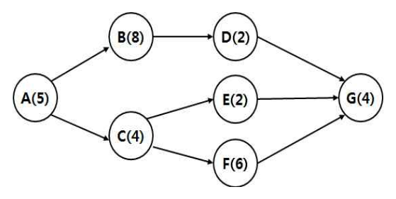

작성 기준: 업로드된 「1-1 정보화법_제도_감리」, 「1-2 사업관리」 강의자료 우선 근거, 외부지식은 보조적으로만 사용(강의자료 미수록 지침은 각 문항에 명시)
정답 출처: 2016년(제17회) 정보시스템 감리사 필기시험 문제 및 답안.pdf (원본 Bold 표시 정답 - 페이지 렌더 이미지 직접 대조 확인)
정답 신뢰도: 매우 높음 (PDF 렌더 이미지 확대 대조로 Bold 표시 검증 완료, 4개 페이지 전 컬럼에 Bold 표시 존재함을 렌더 추적으로 확인)
특이사항
- 문항 1: 원본에 보기 ①②③④가 모두 Bold 처리되어 있어 전항정답으로 확인됨(320dpi 확대 재확인). 작업 추가 시 CPI 변화는 EV·AC의 증감 관계와 변경 승인 여부에 따라 상승·하락·불변·판단불가가 모두 성립할 수 있어, 정답을 하나로 특정할 수 없었던 것으로 판단된다.
법령 기준 주의: 본 회차는 2016년 시행분으로 출제 당시 법령·지침 기준으로 정답이 확정되어 있다. 각 문항의 「관련 이론 정리」 말미에 현행(2025년 기준) 개정사항을 별도 표기하였으므로, 현행 시험 대비 시 반드시 개정 내용을 함께 확인해야 한다.
| 번호 | 정답 | 번호 | 정답 | 번호 | 정답 |
|---|---|---|---|---|---|
| 1 | ①,②,③,④(전항정답) | 10 | ① | 19 | ② |
| 2 | ② | 11 | ④ | 20 | ③ |
| 3 | ③ | 12 | ④ | 21 | ③ |
| 4 | ④ | 13 | ③ | 22 | ③ |
| 5 | ③ | 14 | ② | 23 | ③ |
| 6 | ③ | 15 | ③ | 24 | ④ |
| 7 | ④ | 16 | ② | 25 | ② |
| 8 | ② | 17 | ④ | ||
| 9 | ③ | 18 | ④ |
2016년 제17회는 사업관리 10문항(1~10번) → 법·지침 15문항(11~25번) 배열로, 다른 회차(사업관리 13 / 법·지침 12)와 비중이 다르다. 법·지침 비중이 15문항으로 가장 높은 회차다.
사업관리 영역(1~10번) 은 EVM(1·5번), 계약 유형(2번), 품질비용(3번), 갈등해결(4번), CPM 네트워크(6번), WBS 투입물(7번), 공정성 이론(8번), 직무설계(9번), 프로젝트 조직(10번)으로 PMBOK 기본 개념 위주로 구성되었다. 계산 문항은 5번(EVM 판정)과 6번(주경로·여유시간) 두 개뿐이라 난도는 평이했으나, 1번이 전항정답 처리될 만큼 논란이 있었다.
법·지침 영역(11~25번) 은 15문항이 배치되어 감리 제도 전반을 폭넓게 물었다. 의무감리 대상(11번), 감리점검 항목(12·20번), 감리인력 배치 계산(13번), 필요적 취소사유(14번), 검사기준서(15번), 요구정의단계 감리 절차 빈칸(16번), 전자정부지원사업 관리지침(17번), 감리법인 업무범위(18번), 상주감리원(19번), 보안약점 개발보안(21번), 공공DB 표준화 지침(22번), SW 재개발비(23번), BMT(24번), PMO 집행단계 업무(25번).
특히 13번(감리인력 배치) 은 60MD를 배분해 상근 비율·업무전문가 비율을 검증하는 계산형 법령 문항으로 이 회차 최고난도였고, 14번(필요적 취소사유) 은 2020년 1번과 같은 조문을 다른 각도로 물어 두 문항을 합치면 필요적 취소사유 4종이 확정되는 중요한 문항이다.
주의할 개정 포인트: 11번의 의무감리 대상 기준금액, 13번의 감리인력 배치 비율, 21번의 개발보안 제도, 24번의 BMT 제도(소프트웨어산업진흥법 → 소프트웨어진흥법 전부개정)는 모두 개정 이력이 있다. 각 문항의 「관련 이론 정리」에서 확인할 것.
| 항목 | 내용 |
|---|---|
| 문서명 | 정보시스템 감리사 감리 및 사업관리 기출문제 해설집 - 2016년 제17회 |
| 대상 문항 | Q1 ~ Q25 (감리 및 사업관리) |
| 원본 출처 | 2016년(제17회) 정보시스템 감리사 필기시험 문제 및 답안.pdf |
| 정답 확인 방법 | PDF 페이지 렌더 이미지 대조(굵은 글씨 표시 확인), 자동 추출 결과와 교차검증, 컬럼별 Bold 존재 여부 렌더추적 |
| 특이 문항 | 문항 1 — 전항정답(①②③④) |
| 문항 배열 | 사업관리 1~10번 · 법/지침 11~25번(법·지침 15문항으로 최다) |
| 그림 포함 문항 | 문항 6 — 활동-마디 CPM 네트워크(assets/2016/q06.png), 서술 전사 병기 |
| 근거 강의자료 | 1-1 정보화법_제도_감리(M01~M06), 1-2 사업관리(M07~M12) |
| 강의자료 미수록(외부지식 보완) 항목 | 전자정부지원사업 관리지침(17번), 공공기관 DB 표준화 지침(22번), SW 재개발비 산정 대상(23번), BMT 제도 세부(24번) |
| 법령 기준 | 2016년 출제 당시 기준 + 현행(2025년) 개정사항 병기 |
| 연계 정정 사항 | 본 회차 14번 확인 결과, 2020년 1번 해설의 "필요적 취소는 2개" 서술을 4종으로 정정함 |
이해당사자의 요구가 있어 프로젝트 진행 중 3곳의 작업이 추가되었다고 가정할 때, CPI(Cost Performance Index)에는 어떤 영향을 줄 수 있는가?
① CPI가 상승한다.
② CPI가 하락한다.
③ CPI는 변하지 않는다.
④ 현재 조건으로 판단할 수 없다.
정답 : ①번, ②번, ③번, ④번 (전항정답 처리)
정답 신뢰도 : 매우 높음 (원본 답안 이미지에서 ①②③④ 네 보기가 모두 Bold 처리되어 있음을 320dpi 확대 재확인. 실제 시험 시행기관이 이의제기 심사 등을 거쳐 전항정답으로 처리한 것으로 판단됨)
| 항목 | 내용 |
|---|---|
| 연도 | 2016년 (제17회) |
| 과목 | 감리 및 사업관리 |
| 문항번호 | 1번 |
| 난이도 | 상 |
| 출제주제 | 원가관리 - 작업 추가가 CPI에 미치는 영향 |
| 연도 | 문항번호 | 핵심개념 |
|---|---|---|
| 2016년 | 1번 | 작업 추가가 CPI에 미치는 영향(본 문항, 전항정답) |
| 2016년 | 5번 | EV·PV·AC 값으로 일정 지연·비용 절감 판정 |
| 2018년 | 9번 | SV 계산 |
| 2020년 | 13번 | EVM 차이·지수 판정 |
★★★★★ 매우 자주 출제
본 문항은 원본 답안에서 네 보기가 모두 Bold 로 표시되어 전항정답으로 처리된 것으로 확인된다. 각 보기가 성립할 수 있는 근거는 다음과 같다.
CPI = EV ÷ AC 이므로, 작업이 추가되었을 때 CPI가 어떻게 변하는지는 EV와 AC가 각각 얼마나 증가하는가에 달려 있다. 문항은 그 조건을 전혀 제시하지 않았다.
| 보기 | 성립 시나리오 |
|---|---|
| ① 상승 | 추가 작업이 승인된 변경으로 기준선에 반영되어 EV가 늘고, 그 작업을 계획보다 효율적으로 수행해 AC 증가폭이 EV 증가폭보다 작은 경우 |
| ② 하락 | 추가 작업이 미승인 상태여서 EV로 인정되지 않고 AC만 증가하는 경우(가장 흔한 실무 시나리오), 또는 추가 작업의 효율이 낮아 AC 증가폭이 더 큰 경우 |
| ③ 변하지 않음 | 추가 작업이 기존 CPI와 동일한 효율로 수행되어 EV·AC가 같은 비율로 증가하는 경우 |
| ④ 판단할 수 없음 | 위 세 경우가 모두 가능하므로, 주어진 정보만으로는 방향을 특정할 수 없다 |
논리적으로 보면 ④가 가장 타당한 답이지만, 특정 가정을 세우면 ①②③도 각각 성립한다. 시행기관이 이 점을 인정해 전항정답 처리한 것으로 보인다.
학습 포인트: 정답 자체보다 "작업 추가 → EV·AC 동시 증가 → 비율 변화는 증감 폭에 좌우" 라는 구조와, 승인 여부에 따라 EV 인정이 갈린다는 원리를 이해하는 것이 중요하다.
본 문항은 전항정답 처리되어 별도의 오답 보기가 존재하지 않는다. 대신 각 보기가 어떤 전제에서 성립하는지를 정리하면 위 「정답 해설」 표와 같다.
핵심은 문항이 "어떤 영향을 줄 수 있는가" 라는 가능성을 묻는 열린 표현을 사용했다는 점이다. "반드시 어떻게 되는가"라고 물었다면 ④만 답이 되었을 것이다.
CPI의 정의와 해석:
| 항목 | 내용 |
|---|---|
| 산식 | CPI = EV ÷ AC |
| CPI > 1 | 비용 절감(1원 투입으로 1원 초과 가치 획득) |
| CPI = 1 | 계획대로 |
| CPI < 1 | 비용 초과 |
작업 추가(범위 변경) 시 EVM 지표의 변화:
| 상황 | BAC | EV | AC | CPI |
|---|---|---|---|---|
| 승인된 변경(기준선 반영) | 증가 | 수행분만큼 증가 | 증가 | 증감 폭에 따라 결정 |
| 미승인 변경(스코프 크리프) | 불변 | 증가하지 않음 | 증가 | 하락 |
이것이 실무에서 중요한 이유: 승인 없이 추가 작업을 수행하면 일한 만큼 EV로 인정받지 못하고 AC만 늘어나 CPI가 악화된다. 그래서 PM은 범위 변경을 반드시 공식 변경통제(CCB) 절차를 거쳐 기준선에 반영시켜야 한다(2017년 13번, 2018년 3번 참조).
EVM 지표 총정리:
| 지표 | 산식 | 판정 |
|---|---|---|
| SV | EV − PV | > 0 일정 선행 |
| CV | EV − AC | > 0 비용 절감 |
| SPI | EV ÷ PV | > 1 일정 선행 |
| CPI | EV ÷ AC | > 1 비용 절감 |
강의자료 연계(M10 원가·품질관리 「5. EVM 기본값·차이·지수」, M07 통합관리 - 통합 변경통제): 강의자료는 EVM 지수와 통합 변경통제(승인된 변경만 기준선 반영)를 각각 다루고 있다. 본 문항은 두 개념의 교차점을 묻는 문항이다.
SI 프로젝트에서 현업 요구로 화면 몇 개를 추가로 개발했는데 변경 승인 절차를 밟지 않은 경우, 월간 보고서의 CPI가 갑자기 떨어진다. 투입 공수(AC)는 늘었는데 그 작업이 계획 범위(BAC)에 없어 EV로 잡히지 않기 때문이다. 이때 PM이 "일은 더 했는데 지표는 나빠졌다"고 항변해도 EVM 체계상으로는 정당한 결과다. 감리원은 진척 감리에서 CPI 급락 구간의 원인을 확인하고, 미승인 추가 작업이 있다면 변경관리 절차 누락을 지적한다.
본 문항처럼 조건이 불충분한 개념 문항은 논란의 소지가 커 복수·전항정답으로 이어지기 쉽다. 수험 전략상으로는 가장 논리적으로 방어 가능한 보기(본 문항의 경우 ④ "판단할 수 없다")를 고르는 것이 안전하다.
정작 시험에서 자주 나오는 것은 조건이 명확한 계산형이다.
| 조건 | CPI 변화 |
|---|---|
| 승인된 변경, 효율 동일 | 불변 |
| 미승인 추가 작업 | 하락(AC만 증가) |
| 재작업 발생 | 하락(EV 증가 없이 AC 증가) |
특히 "재작업은 EV를 늘리지 않는다"(이미 인정받은 작업을 다시 하는 것이므로)는 점은 별도 문항으로도 출제되므로 함께 기억할 것.
제품 및 서비스를 제공하는 판매자인 "을" 계약자에게 원가와 이익 및 손실에 대한 모든 책임과 위험을 전가하는 계약 방식은?
① 실비정산 계약
② 고정가격 계약
③ 기간 및 재료 계약
④ 비확정 납기 계약
정답 : ②번
정답 신뢰도 : 매우 높음 (원본 이미지 Bold 확인)
| 항목 | 내용 |
|---|---|
| 연도 | 2016년 (제17회) |
| 과목 | 감리 및 사업관리 |
| 문항번호 | 2번 |
| 난이도 | 중 |
| 출제주제 | 조달관리 - 계약 유형별 위험 부담 |
| 연도 | 문항번호 | 핵심개념 |
|---|---|---|
| 2016년 | 2번 | 판매자 위험 최대 계약 = 고정가격(본 문항) |
| 2020년 | 20번 | 조달관리 계획수립 투입물(공급자 선정기준은 산출물) |
★★★ 보통 출제
계약 유형은 원가 초과 위험을 누가 부담하는가에 따라 구분된다.
고정가격 계약(Fixed Price Contract) 은 계약 시점에 총액을 확정하고, 실제 원가가 얼마가 들든 그 금액만 지급하는 방식이다. 따라서
즉 원가·이익·손실에 대한 모든 책임과 위험이 판매자("을")에게 전가되므로 문항의 설명과 정확히 일치한다. 따라서 정답은 ②번이다.
판매자가 실제로 지출한 원가를 구매자가 정산해 주고 여기에 수수료(Fee)를 더해 지급하는 방식이다. 원가가 늘어나면 구매자가 그만큼 더 지급하므로 위험은 구매자(발주자)가 부담한다. 문항과 정반대다.
투입 시간(인력 단가 × 시간)과 자재비를 기준으로 정산하는 방식으로, 고정가격과 실비정산의 중간 성격이다. 단가는 고정되지만 총량은 확정되지 않아 위험이 양측에 분산된다.
계약 유형 분류에서 위험 부담 기준으로 정의된 표준 명칭이 아니다. 납기(일정)에 관한 표현이지 원가 위험 부담과 직접 관련이 없다. 혼동을 유도하기 위한 보기다.
계약 유형별 위험 부담:
| 계약 유형 | 위험 부담 | 특징 | 적합한 상황 |
|---|---|---|---|
| 고정가격(FP) | 판매자 최대 | 총액 확정, 원가 초과분 판매자 부담 | 범위가 명확하게 정의된 사업 |
| 시간·자재(T&M) | 중간(분산) | 단가 고정, 총량 미확정 | 범위가 유동적인 소규모·긴급 |
| 실비정산(CR) | 구매자 최대 | 실제 원가 + 수수료 | 범위 불확실, R&D성 사업 |
세부 유형(PMBOK):
| 대분류 | 세부 유형 | 내용 |
|---|---|---|
| 고정가격 | FFP(확정 고정가) | 총액 완전 확정 — 판매자 위험 최대 |
| 고정가격 | FPIF(성과급 가산 고정가) | 성과에 따라 인센티브 |
| 고정가격 | FP-EPA(경제가격 조정부) | 물가·환율 변동 반영 |
| 실비정산 | CPFF(고정수수료 가산) | 원가 + 고정 수수료 |
| 실비정산 | CPIF(성과급 가산) | 원가 + 성과 연동 수수료 |
| 실비정산 | CPAF(보상금 가산) | 원가 + 구매자 재량 보상금 |
위험 부담 스펙트럼:
FFP ← (판매자 위험 큼) ─ FPIF ─ T&M ─ CPIF ─ CPFF → (구매자 위험 큼)
공공 SI에서의 적용:
| 사업 유형 | 계약 방식 |
|---|---|
| 시스템 구축(범위 확정) | 고정가격(총액 확정) — 국내 공공사업의 표준 |
| 컨설팅·ISP | 고정가격 또는 실비정산 성격 혼재 |
| 유지보수 | 고정가격(연간 총액) 또는 요율제 |
강의자료 연계(M12 조달·이해관계자관리 「2. 계약 유형·위험 부담」): 강의자료는 계약 유형과 위험 부담을 별도 절로 정리하고 있어 본 문항이 직접 대응된다.
▶ 현행(2025년 기준) 개정사항: 계약 유형 분류(FP·T&M·CR)는 PMBOK 7판에서도 유지된다. 국내 공공 SW사업은 여전히 총액 확정 고정가격이 대부분이며, 이 때문에 과업 변경 시 분쟁이 발생하기 쉬워 과업심의위원회 제도로 보완하고 있다(2017년 21번 참조).
국내 공공 SW사업은 대부분 총액 확정 고정가격 계약이다. 그래서 사업자는 요구사항이 불명확한 상태에서 총액을 제시해야 하고, 개발 중 요구가 늘어나면 그 부담을 고스란히 떠안는다. 이것이 SW업계가 지속적으로 문제 제기해 온 구조이며, 그 대응으로 요구사항 상세화 의무(제안요청서 단계에서 요구사항을 구체화)와 과업내용 변경 시 계약금액 조정 제도가 강화되었다. 감리원은 과업 변경이 발생했을 때 계약금액 조정 절차가 적정하게 이행되었는지를 점검한다.
계약 유형 문항은 "누가 위험을 지는가" 한 축으로 전부 해결된다.
| 지문 표현 | 정답 |
|---|---|
| "판매자(계약자)에게 모든 위험 전가" | 고정가격 |
| "구매자(발주자)가 원가를 정산" | 실비정산 |
| "투입 시간·자재 기준" | T&M |
핵심 문장 하나: "고정가격 = 판매자 위험 최대 / 실비정산 = 구매자 위험 최대".
또한 보기에 "비확정 납기 계약" 처럼 표준 분류에 없는 명칭이 섞여 있으면 그것은 허구 보기이므로 즉시 소거할 수 있다.
품질 비용의 종류와 그 예에 관한 설명으로 가장 적절하지 않은 것은?
① 평가비용 – 시험기기의 보전 비용
② 내부실패비용 – 작업중단 비용
③ 외부실패비용 – 재검사 비용
④ 예방비용 – 공정설계 비용
정답 : ③번
정답 신뢰도 : 매우 높음 (원본 이미지 Bold 확인)
| 항목 | 내용 |
|---|---|
| 연도 | 2016년 (제17회) |
| 과목 | 감리 및 사업관리 |
| 문항번호 | 3번 |
| 난이도 | 중 |
| 출제주제 | 품질관리 - 품질비용(COQ) 종류와 사례 매칭 |
| 연도 | 문항번호 | 핵심개념 |
|---|---|---|
| 2016년 | 3번 | 재검사 = 내부실패비용(본 문항) |
| 2017년 | 12번 | 고객 상실 = 외부실패비용 |
| 2020년 | 16번 | 파괴테스트 손실 = 평가비용 |
★★★★ 자주 출제
품질비용 4분류에 각 사례를 대응시키면 다음과 같다.
| 보기 | 제시된 분류 | 올바른 분류 | 판정 |
|---|---|---|---|
| ① 시험기기의 보전 비용 | 평가비용 | 평가비용(검사·시험 수행을 위한 장비 유지) | ○ |
| ② 작업중단 비용 | 내부실패비용 | 내부실패비용(인도 전 결함으로 인한 손실) | ○ |
| ③ 재검사 비용 | 외부실패비용 | 내부실패비용 ← 불일치 | ✕ |
| ④ 공정설계 비용 | 예방비용 | 예방비용(사전에 결함을 막기 위한 설계) | ○ |
재검사(Re-inspection) 는 검사에서 불합격이 나와 수정한 뒤 다시 검사하는 것이다. 이 모든 과정은 제품이 고객에게 인도되기 전에 조직 내부에서 이루어지므로 내부실패비용에 해당한다.
외부실패비용은 결함이 고객에게 도달한 뒤 발생하는 비용(보증작업, 리콜, 제품 책임, 고객 상실, 평판 손상)이다. 재검사는 고객과 무관하게 내부에서 끝나므로 외부실패가 될 수 없다.
따라서 가장 적절하지 않은 짝은 ③번이다.
평가비용은 요구 품질에 부합하는지 확인·측정하기 위해 지출하는 비용이다. 검사·시험 수행 자체뿐 아니라 시험 장비를 정상 상태로 유지·교정하는 비용도 여기 포함된다. 옳은 짝이다.
결함이 발견되어 생산·개발 작업이 중단되면서 발생하는 손실은 인도 전 발생하므로 내부실패비용이다. 옳은 짝이다.
공정을 처음부터 결함이 적게 나오도록 설계하는 데 드는 비용은 대표적인 예방비용이다. 옳은 짝이다.
품질비용(COQ) 4분류와 대표 사례:
| 대분류 | 소분류 | 대표 사례 |
|---|---|---|
| 적합성 비용(통제비용) | 예방비용 | 교육·훈련, 프로세스 정의, 공정설계, 표준 수립, 품질계획 |
| 적합성 비용(통제비용) | 평가비용 | 검사·시험, 시험기기 보전·교정, 파괴테스트 손실, 감사 |
| 비적합성 비용(실패비용) | 내부실패비용 | 재작업, 재검사, 폐기(Scrap), 작업중단, 등급 저하 |
| 비적합성 비용(실패비용) | 외부실패비용 | 보증작업, 리콜, 제품 책임, 고객 상실, 평판 손상, 비즈니스 손실 |
"재"로 시작하는 비용의 분류(혼동 주의):
| 항목 | 분류 | 이유 |
|---|---|---|
| 재작업(Rework) | 내부실패 | 인도 전 수정 |
| 재검사(Re-inspection) | 내부실패 | 인도 전 재확인 |
| 재시험(Re-test) | 내부실패 | 인도 전 재검증 |
단, 최초 검사·시험은 평가비용이다. "재(再)"가 붙으면 결함이 있었다는 뜻이므로 실패비용이 된다는 점이 판별 기준이다.
| 구분 | 분류 |
|---|---|
| 검사·시험(최초) | 평가비용(적합성) |
| 재검사·재시험 | 내부실패비용(비적합성) |
판별 3단 질문:
| 질문 | 답 → 분류 |
|---|---|
| 불량이 없어도 쓰는 돈인가? | 예 → 적합성(예방·평가) |
| 불량이 생겨서 쓰는 돈인가? | 예 → 비적합성(실패) |
| 결함이 고객에게 갔는가? | 갔음 → 외부실패 / 안 갔음 → 내부실패 |
강의자료 연계(M10 원가·품질관리 「10. 품질비용(COQ) ★★★」): 강의자료는 품질비용을 적합비용(예방·평가) / 부적합비용(내부·외부 실패) 로 나눈 4분류 표를 제시하고 있어 본 문항이 직접 대응된다.
SI 프로젝트의 결함관리 통계에서 재검사·재시험 건수는 곧 내부실패비용의 지표다. 통합테스트에서 결함이 대량 발견되어 재시험이 반복되면 일정과 비용이 급격히 악화된다. 이를 막는 방법은 앞 단계에서 잡는 것(예방·평가) — 코딩 표준 정의와 교육(예방), 동료검토와 단위테스트 강화(평가)다. 감리원은 결함 조치 이력에서 재시험 반복 횟수를 확인해 품질 체계의 성숙도를 판단한다.
품질비용 매칭 문항은 사례를 4분류에 대응시키는 것이 전부다. 헷갈리기 쉬운 사례를 미리 정리해 두면 즉답이 가능하다.
| 사례 | 분류 | 판별 근거 |
|---|---|---|
| 시험기기 보전 | 평가 | 검사를 하기 위한 준비 |
| 파괴테스트 손실 | 평가 | "손실"이라도 검증 목적(2020년 16번) |
| 재검사·재작업·폐기 | 내부실패 | "재"가 붙으면 결함이 있었다는 뜻 |
| 보증작업·리콜·고객 상실 | 외부실패 | 고객이 등장하면 외부(2017년 12번) |
| 공정설계·교육 | 예방 | 사전 투자 |
본 회차 3번(재검사 = 내부실패), 2017년 12번(고객 상실 = 외부실패), 2020년 16번(파괴테스트 = 평가)이 품질비용 3문항 세트이므로 함께 정리하면 효율적이다.
갈등해결에 대한 방법 중 상대방의 목표와 자신의 목표 모두를 중요하게 여기는 갈등해결 방식으로 가장 적절한 것은?
① 철수(Withdrawing)
② 양보(Smoothing)
③ 타협(Compromising)
④ 문제해결(Problem Solving)
정답 : ④번
정답 신뢰도 : 매우 높음 (원본 이미지 Bold 확인)
| 항목 | 내용 |
|---|---|
| 연도 | 2016년 (제17회) |
| 과목 | 감리 및 사업관리 |
| 문항번호 | 4번 |
| 난이도 | 하 |
| 출제주제 | 인적자원관리 - 갈등해결 기법(문제해결/협력) |
| 연도 | 문항번호 | 핵심개념 |
|---|---|---|
| 2016년 | 4번 | 양쪽 목표 모두 중시 = 문제해결(본 문항) |
| 2019년 | 2번 | 터크맨 팀 발달 — 격동(Storming)이 갈등 최고조 |
★★★ 보통 출제
갈등해결 기법은 자기 주장(Assertiveness) 과 협조성(Cooperativeness) 두 축으로 분류된다.
| 기법 | 자기 주장 | 협조성 | 결과 |
|---|---|---|---|
| 철수/회피(Withdraw/Avoid) | 낮음 | 낮음 | Lose-Lose(문제 미해결·연기) |
| 완화/수용(Smooth/Accommodate) | 낮음 | 높음 | Lose-Win(상대 목표 우선) |
| 강요/지시(Force/Direct) | 높음 | 낮음 | Win-Lose(자기 목표 관철) |
| 타협(Compromise) | 중간 | 중간 | 부분 만족(양쪽 다 일부 양보) |
| 문제해결/협력(Problem Solve/Collaborate) | 높음 | 높음 | Win-Win |
문항이 요구하는 것은 "상대방의 목표와 자신의 목표 모두를 중요하게 여기는" 방식, 즉 양쪽 목표를 모두 충족시키려는 접근이다. 이는 자기 주장과 협조성이 모두 높은 문제해결(협력) 에 해당한다. 근본 원인을 함께 분석해 양측이 모두 만족하는 해법을 찾는 방식이며, PMBOK이 가장 바람직한 기법으로 제시한다. 따라서 정답은 ④번이다.
갈등 상황에서 물러나거나 연기하는 방식이다. 자기 목표도 상대 목표도 추구하지 않으므로 문항 조건과 정반대다. 다만 감정이 격해진 상황에서 일시적 냉각기로는 유효할 수 있다.
차이점보다 공통점을 강조하며 상대에게 맞춰 주는 방식이다. 상대방 목표를 우선하고 자기 목표는 양보하므로, "모두 중요하게 여긴다"는 조건과 다르다.
양측이 일부씩 양보해 중간 지점에서 합의하는 방식이다. 언뜻 "둘 다 고려"처럼 보이지만, 실제로는 양쪽 모두 목표를 완전히 달성하지 못하는 부분 만족(Lose-Lose 또는 부분 Win) 이다. 가장 매력적인 오답이나, "모두를 중요하게 여긴다"는 것은 양쪽 목표를 모두 충족시킨다는 뜻이므로 문제해결이 맞다.
갈등해결 5기법 상세:
| 기법 | 영문 | 설명 | 적합한 상황 |
|---|---|---|---|
| 철수/회피 | Withdraw/Avoid | 갈등에서 물러남, 연기 | 사소한 사안, 냉각기 필요, 정보 부족 |
| 완화/수용 | Smooth/Accommodate | 공통점 강조, 상대에게 양보 | 관계 유지가 더 중요, 내가 틀렸을 때 |
| 타협 | Compromise/Reconcile | 서로 일부 양보, 중간 합의 | 시간 촉박, 양측 힘이 대등 |
| 강요/지시 | Force/Direct | 자기 주장 관철(다수결·권한) | 긴급 상황, 안전 문제 |
| 문제해결/협력 | Collaborate/Problem Solve | 근본원인 분석, Win-Win 해법 | 시간이 있고 관계·결과 모두 중요 |
PMBOK의 평가:
| 순위 | 기법 |
|---|---|
| 가장 바람직 | 문제해결(협력) — 지속 가능한 합의 |
| 차선 | 타협 — 신속하나 부분 만족 |
| 제한적 유효 | 완화·철수 — 임시방편 |
| 가장 바람직하지 않음 | 강요 — 관계 훼손(단, 긴급 시 필요) |
갈등의 성격 이해:
| 관점 | 내용 |
|---|---|
| 갈등은 불가피 | 프로젝트는 제한된 자원·상충하는 요구를 다루므로 갈등이 자연스러움 |
| 갈등은 유익할 수 있음 | 건설적 갈등은 대안 검토·창의적 해법을 촉진 |
| 팀 발달 단계 | 터크맨 모형의 격동(Storming) 단계가 갈등 최고조(2019년 2번 참조) |
| 해결 원칙 | 사람이 아니라 이슈에 집중, 현재·미래 지향 |
갈등의 주요 원인(프로젝트):
일정, 우선순위, 자원, 기술적 의견, 관리 절차, 원가, 개인적 성향
강의자료 연계(M11 인적자원·위험관리 - 갈등관리): 강의자료는 인적자원관리에서 팀 발달 단계(터크맨)와 동기이론을 다루고 있으며, 갈등관리 기법이 이와 연계된다.
▶ 현행(2025년 기준) 개정사항: 갈등해결 5기법은 PMBOK 7판에서도 「팀(Team)」 성과영역의 핵심 개념으로 유지된다. 애자일 환경에서는 회고(Retrospective) 를 통한 구조적 갈등 해소가 강조된다.
SI 프로젝트에서 "현업은 기능 추가를 원하고 개발팀은 일정을 지켜야 하는" 전형적 갈등이 발생하면, PM의 대응이 갈린다. 강요(발주기관 권한으로 밀어붙임)는 개발팀 사기를 떨어뜨리고, 철수(결정을 미룸)는 문제를 키운다. 타협(기능 절반만 반영)은 양쪽 모두 불만이 남는다. 문제해결(협력) 은 "왜 그 기능이 필요한가"라는 근본 목적을 함께 파악해, 더 적은 공수로 같은 목적을 달성하는 대안을 찾는 것이다. 시간이 걸리지만 유일하게 양측이 모두 만족하는 방식이다.
갈등해결 문항은 두 축(자기 주장 × 협조성) 으로 즉시 판별된다.
| 지문 표현 | 정답 |
|---|---|
| "양쪽 목표를 모두 중요하게", "Win-Win", "근본원인 분석" | 문제해결(협력) |
| "서로 일부 양보", "중간 합의" | 타협 |
| "상대에게 맞춰", "공통점 강조" | 완화(양보) |
| "물러남", "연기", "회피" | 철수 |
| "권한으로 관철", "다수결" | 강요 |
가장 자주 나오는 함정이 문제해결 ↔ 타협을 헷갈리게 하는 것이다. 구분 문장 하나: "타협은 둘 다 조금씩 손해, 문제해결은 둘 다 만족".
획득가치분석을 적용할 때 프로젝트 일정이 계획보다 지연되고 있지만 실제 비용은 당초 예산보다 절감되고 있다고 판단하는 경우는?
① EV = 200, PV = 180, AC = 210
② EV = 200, PV = 180, AC = 190
③ EV = 200, PV = 210, AC = 180
④ EV = 200, PV = 210, AC = 220
정답 : ③번
정답 신뢰도 : 매우 높음 (원본 이미지 Bold 확인)
| 항목 | 내용 |
|---|---|
| 연도 | 2016년 (제17회) |
| 과목 | 감리 및 사업관리 |
| 문항번호 | 5번 |
| 난이도 | 중 |
| 출제주제 | 원가관리 - EVM 일정 지연·비용 절감 판정 |
| 연도 | 문항번호 | 핵심개념 |
|---|---|---|
| 2016년 | 5번 | EV·PV·AC로 지연+절감 판정(본 문항) |
| 2018년 | 9번 | SV 계산(−900만원) |
| 2020년 | 13번 | 차이·지수 혼합 제시 판정 |
★★★★★ 매우 자주 출제
문항이 요구하는 두 조건을 산식으로 옮기면 다음과 같다.
| 조건 | 산식 | 부등식 |
|---|---|---|
| 일정 지연 | SV = EV − PV < 0 | EV < PV |
| 비용 절감 | CV = EV − AC > 0 | EV > AC |
두 조건을 합치면 AC < EV < PV 라는 대소 관계가 성립한다. 각 보기를 대입해 보면 다음과 같다.
| 보기 | EV | PV | AC | SV = EV−PV | CV = EV−AC | 판정 |
|---|---|---|---|---|---|---|
| ① | 200 | 180 | 210 | +20(선행) | −10(초과) | 일정 선행 + 비용 초과 ✕ |
| ② | 200 | 180 | 190 | +20(선행) | +10(절감) | 일정 선행 + 비용 절감 ✕ |
| ③ | 200 | 210 | 180 | −10(지연) | +20(절감) | 일정 지연 + 비용 절감 ✔ |
| ④ | 200 | 210 | 220 | −10(지연) | −20(초과) | 일정 지연 + 비용 초과 ✕ |
③만이 AC(180) < EV(200) < PV(210) 을 만족하므로 정답은 ③번이다.
빠른 풀이법: EV가 200으로 고정되어 있으므로 PV는 200보다 커야(지연) 하고, AC는 200보다 작아야(절감) 한다. 이 두 가지만 확인하면 ③이 즉시 나온다.
EV > PV이므로 일정 선행, EV < AC이므로 비용 초과. 문항 조건과 양쪽 다 반대다.
EV > PV이므로 일정 선행, EV > AC이므로 비용 절감. 비용 조건은 맞지만 일정이 선행이므로 틀렸다. 가장 이상적인 상태(빠르고 싸게)이나 문항이 요구하는 상황은 아니다.
EV < PV이므로 일정 지연, EV < AC이므로 비용 초과. 일정 조건은 맞지만 비용이 초과되므로 틀렸다. 가장 나쁜 상태(느리고 비싸게)다.
EVM 4상한 매트릭스:
| 상태 | SV(일정) | CV(비용) | 보기 | 해석 |
|---|---|---|---|---|
| 이상적 | + (선행) | + (절감) | ② | 빠르고 싸게 |
| 본 문항 조건 | −(지연) | +(절감) | ③ | 느리지만 싸게 — 투입 부족 의심 |
| 자원 과투입 | + (선행) | − (초과) | ① | 빠르지만 비싸게 |
| 최악 | − (지연) | − (초과) | ④ | 느리고 비싸게 |
차이·지수 총정리:
| 지표 | 산식 | 판정 기준 |
|---|---|---|
| SV | EV − PV | > 0 선행 / < 0 지연 |
| CV | EV − AC | > 0 절감 / < 0 초과 |
| SPI | EV ÷ PV | > 1 선행 / < 1 지연 |
| CPI | EV ÷ AC | > 1 절감 / < 1 초과 |
"느리지만 싸게"(본 문항 상황)의 실무적 해석:
| 가능한 원인 | 설명 |
|---|---|
| 투입 인력 부족 | 계획보다 적은 인력으로 진행 → 비용은 적게 들지만 일정 지연 |
| 작업 지연·대기 | 선행 작업 지연으로 후속이 착수 못함 |
| 저효율 자원의 저비용 투입 | 단가가 낮은 인력 투입 → 비용↓, 속도↓ |
즉 비용 절감이 성과가 아니라 "일을 덜 했기 때문" 일 수 있으므로, CV가 양수라고 안심하면 안 된다는 것이 이 상태의 관리 포인트다.
짝 맞추기(암기 핵심):
| 알파벳 | 짝 | 이유 |
|---|---|---|
| S(Schedule, 일정) | PV(Planned Value) | 계획 대비 진척 |
| C(Cost, 비용) | AC(Actual Cost) | 실제 지출 대비 성과 |
강의자료 연계(M10 원가·품질관리 「5. EVM 기본값·차이·지수」, 「7. EVM 계산 기출」): 강의자료는 EVM 차이·지수와 계산 기출을 별도 절로 수록하고 있어 본 문항이 직접 대응된다.
월간 사업관리 보고에서 SV < 0, CV > 0(느리지만 싸게)이 나오면 PM은 "비용을 아꼈다"고 보고하고 싶은 유혹을 받는다. 그러나 실제로는 인력이 제때 투입되지 않아 진척이 늦은 경우가 대부분이고, 후반부에 인력을 몰아 투입하면 CV가 급격히 악화된다. 감리원은 진척 감리에서 이 패턴이 보이면 계획 대비 실제 투입 인력(MM) 을 대조해 인력 미투입 여부를 확인한다. 이는 공공 SI 감리의 대표적 점검 포인트다.
EVM 판정 문항은 두 부등식만 세우면 기계적으로 풀린다.
일정 지연 → EV < PV / 비용 절감 → EV > AC
보기가 모두 EV = 200으로 고정되어 있으면 더 쉽다. PV와 AC를 200과 비교하기만 하면 된다.
| 원하는 상태 | PV | AC |
|---|---|---|
| 일정 지연 | 200 초과 | — |
| 일정 선행 | 200 미만 | — |
| 비용 절감 | — | 200 미만 |
| 비용 초과 | — | 200 초과 |
또한 "S는 PV와, C는 AC와 짝" 이라는 원칙과 "모든 산식은 EV가 앞" 이라는 원칙 두 가지가 EVM 문항 전체를 관통한다.
다음의 활동-마디 프로젝트 네트워크에 관련된 설명으로 가장 거리가 먼 것은?

(그림 서술 전사) 노드는 원으로 표시되며 괄호 안 숫자는 작업소요 기간이다. 연결 관계는 다음과 같다.
- A(5) → B(8), A(5) → C(4)
- B(8) → D(2)
- C(4) → E(2), C(4) → F(6)
- D(2) → G(4), E(2) → G(4), F(6) → G(4)
① 주경로의 길이는 19이다.
② 활동 C가 지연되면 프로젝트 기간이 늘어난다.
③ 여유시간이 0보다 큰 활동은 없다.
④ 주경로가 두 개 존재한다.
정답 : ③번
정답 신뢰도 : 매우 높음 (원본 이미지 Bold 확인)
| 항목 | 내용 |
|---|---|
| 연도 | 2016년 (제17회) |
| 과목 | 감리 및 사업관리 |
| 문항번호 | 6번 |
| 난이도 | 상 |
| 출제주제 | 시간관리 - 활동-마디(AON) 네트워크의 주경로·여유시간 |
| 연도 | 문항번호 | 핵심개념 |
|---|---|---|
| 2016년 | 6번 | 주경로 2개·E의 여유 4일(본 문항) |
| 2017년 | 25번 | 여유시간이 0이 아닌 활동 = G(TF 3) |
| 2018년 | 13번 | 3일 지연 가능한 활동 = E(TF 4) |
| 2018년 | 10번 | ADM(AOA)의 특징 |
★★★★★ 매우 자주 출제
1단계 — 경로 열거
| 경로 | 계산 | 길이 |
|---|---|---|
| A-B-D-G | 5 + 8 + 2 + 4 | 19 |
| A-C-E-G | 5 + 4 + 2 + 4 | 15 |
| A-C-F-G | 5 + 4 + 6 + 4 | 19 |
→ 프로젝트 기간 = 19, 주경로는 A-B-D-G와 A-C-F-G 두 개
2단계 — 활동별 총여유시간(TF) 산출
TF = 프로젝트 기간 − (그 활동이 속한 최장 경로의 길이)
| 활동 | 속한 최장 경로 | 길이 | TF | 판정 |
|---|---|---|---|---|
| A | A-B-D-G / A-C-F-G | 19 | 0 | 주경로 |
| B | A-B-D-G | 19 | 0 | 주경로 |
| C | A-C-F-G | 19 | 0 | 주경로 |
| D | A-B-D-G | 19 | 0 | 주경로 |
| E | A-C-E-G | 15 | 4 | 여유 있음 |
| F | A-C-F-G | 19 | 0 | 주경로 |
| G | A-B-D-G / A-C-F-G | 19 | 0 | 주경로 |
3단계 — 보기 판정
| 보기 | 내용 | 판정 |
|---|---|---|
| ① | 주경로의 길이는 19이다 | ○ — 계산 결과와 일치 |
| ② | 활동 C가 지연되면 프로젝트 기간이 늘어난다 | ○ — C는 주경로(A-C-F-G) 위에 있어 TF = 0 |
| ③ | 여유시간이 0보다 큰 활동은 없다 | ✕ — E의 TF = 4 |
| ④ | 주경로가 두 개 존재한다 | ○ — A-B-D-G, A-C-F-G |
따라서 가장 거리가 먼 설명은 ③번이다.
세 경로 중 최댓값이 19(A-B-D-G, A-C-F-G)이므로 주경로의 길이는 19가 맞다. 옳은 설명이다.
C는 주경로 A-C-F-G 위에 있어 TF = 0이다. 따라서 C가 하루라도 지연되면 그 경로가 20이 되어 프로젝트 기간이 그만큼 늘어난다. 옳은 설명이다.
주의: C는 A-C-E-G(15) 경로에도 속하지만, 여유시간은 그 활동이 속한 경로 중 가장 긴 것을 기준으로 계산한다. C의 최장 경로가 19이므로 TF = 0이다.
길이 19인 경로가 A-B-D-G와 A-C-F-G 두 개이므로 주경로가 2개 존재한다. 주공정 경로는 하나뿐이라는 고정관념 때문에 틀렸다고 오판하기 쉬우나, 동일 길이 경로가 여럿이면 주경로도 여럿이다. 옳은 설명이다.
활동-마디(AON) vs 활동-화살표(AOA):
| 구분 | AON(Activity on Node) = PDM | AOA(Activity on Arrow) = ADM |
|---|---|---|
| 활동 표현 | 노드(원·박스) | 화살표 |
| 노드 안 숫자 | 소요기간 | (사건 번호) |
| 관계 유형 | FS·SS·FF·SF 모두 | FS만 |
| 더미 활동 | 불필요 | 필요 |
본 문항은 AON(활동-마디) 방식이며, 2018년 10번이 AOA(ADM)의 특징을 물었다.
여유시간 2종:
| 구분 | 산식 | 의미 |
|---|---|---|
| 총여유시간(TF) | LS − ES = LF − EF | 프로젝트 종료일에 영향 없이 지연 가능한 기간 |
| 자유여유시간(FF) | min(후행 ES) − EF | 후행 활동 ES에 영향 없이 지연 가능한 기간 |
본 문항 E의 상세 계산(검산):
전진 계산: A(0~5) → C(5~9) → E(9~11) → G는 max(EF_D=15, EF_E=11, EF_F=15) = 15부터 시작(15~19)
후진 계산: G(15~19) → E의 LF = LS_G = 15, LS = 15 − 2 = 13
TF(E) = LS − ES = 13 − 9 = 4 ✔ (경로 열거법 결과와 일치)
주경로(Critical Path)의 성질:
| 성질 | 내용 |
|---|---|
| 길이 | 네트워크에서 가장 긴 경로 |
| 여유 | TF = 0 |
| 영향 | 주경로 활동 지연 = 프로젝트 지연 |
| 복수 존재 | 같은 길이 경로가 여럿이면 주경로도 여럿(본 문항) |
| 관리 | 주경로가 여럿이면 관리 부담·리스크 증가 |
강의자료 연계(M09 범위·시간관리 「8. 주공정법(CPM)·여유」): 강의자료는 주공정법과 여유시간을 별도 절로 정리하고 있어 본 문항이 직접 대응된다.
주경로가 2개 이상인 프로젝트는 관리 난도가 높다. 어느 한 경로만 관리해서는 안 되고 두 경로를 동시에 모니터링해야 하며, 한쪽을 단축해도 다른 쪽이 남아 있어 전체 기간이 줄지 않기 때문이다. 본 문항처럼 A-B-D-G와 A-C-F-G가 모두 19라면, 일정을 단축하려면 두 경로 모두에서 시간을 줄여야 한다. 감리원은 일정계획 검토 시 주경로 개수와 준주공정(Near-Critical) 경로(여유가 매우 작은 경로)를 함께 확인해 리스크 수준을 판단한다.
AON 네트워크 문항은 경로 열거법이 가장 빠르다.
본 문항은 이 세 단계로 네 보기가 모두 판정된다.
자주 나오는 함정 두 가지:
| 함정 | 올바른 이해 |
|---|---|
| "주경로는 항상 하나다" | 동일 길이면 여럿 존재 가능 |
| 활동이 여러 경로에 속할 때 | 가장 긴 경로 기준으로 TF 계산 |
또한 "여유시간이 0보다 큰 활동은 없다" = "모든 활동이 주경로 위에 있다"는 뜻인데, 이는 네트워크에 분기가 있으면 성립하기 어렵다. 본 문항처럼 분기(C→E, C→F)가 있으면 짧은 쪽에 여유가 생기므로 이 서술은 의심해야 한다.
프로젝트 범위가 결정되어 WBS를 작성하려 한다. WBS를 작성하기 위해서 필요한 자료로 가장 거리가 먼 것은?
① 조직 프로세스 자산
② 프로젝트 범위기술서
③ 기업환경요인
④ 요구사항 추적 매트릭스
정답 : ④번
정답 신뢰도 : 매우 높음 (원본 이미지 Bold 확인)
| 항목 | 내용 |
|---|---|
| 연도 | 2016년 (제17회) |
| 과목 | 감리 및 사업관리 |
| 문항번호 | 7번 |
| 난이도 | 중 |
| 출제주제 | 범위관리 - WBS 작성(Create WBS) 프로세스의 투입물 |
| 연도 | 문항번호 | 핵심개념 |
|---|---|---|
| 2016년 | 7번 | WBS 작성 투입물(RTM은 산출물)(본 문항) |
| 2017년 | 24번 | WBS 100% 규칙 |
| 2020년 | 17번 | 범위기준선 = 범위기술서 + WBS + WBS 사전 |
| 2020년 | 20번 | 조달관리 계획수립 투입물(선정기준은 산출물) |
★★★★ 자주 출제
WBS 작성(Create WBS) 프로세스의 투입물은 다음과 같다.
| 투입물 | 역할 |
|---|---|
| 범위관리 계획서 | WBS를 어떻게 만들지 정의한 계획 |
| 프로젝트 범위기술서 | 분해 대상이 되는 인도물·범위 정의 |
| 요구사항 문서 | 인도물이 충족해야 할 요구 |
| 기업환경요인(EEF) | 산업 표준, 조직 문화·구조 등 외부 조건 |
| 조직 프로세스 자산(OPA) | 과거 WBS 템플릿, 표준 분해 체계, 교훈 |
보기 ④의 요구사항 추적 매트릭스(RTM: Requirements Traceability Matrix) 는 「요구사항 수집(Collect Requirements)」 프로세스의 산출물이다. 요구사항이 인도물·설계·시험까지 어떻게 연결되는지를 추적하는 표로, WBS가 만들어진 뒤에 그 WBS 요소와 연결되는 성격이 강하다. 즉 WBS 작성의 입력 자료라기보다 요구사항 관리의 산출물이다.
따라서 WBS 작성에 필요한 자료로 가장 거리가 먼 것은 ④번이다.
논리로 이해하기: WBS를 만들려면 "무엇을 만들 것인가"(범위기술서·요구사항 문서)와 "어떻게 나눌 것인가"(범위관리 계획서·과거 템플릿·조직 표준)가 필요하다. RTM은 "요구사항이 어디에 반영되었는가" 를 추적하는 문서이므로 분해 작업 자체의 입력이 아니다.
과거 유사 프로젝트의 WBS 템플릿, 표준 분해 체계, 교훈(Lessons Learned) 등이 여기 포함되며, WBS 작성의 중요한 참고 자료다. 투입물이 맞다.
분해의 직접적 대상이 되는 문서다. 인도물·수용기준·제외사항·제약·가정이 기술되어 있어 WBS 작성의 가장 핵심적인 투입물이다.
조직 구조·문화, 산업 표준, 규제 등 조직 밖에서 주어지는 조건으로, WBS의 분해 수준·형식에 영향을 준다. 투입물이 맞다.
범위관리 프로세스별 주요 산출물:
| 프로세스 | 주요 산출물 |
|---|---|
| 범위관리 계획수립 | 범위관리 계획서, 요구사항관리 계획서 |
| 요구사항 수집 | 요구사항 문서, 요구사항 추적 매트릭스(RTM) |
| 범위 정의 | 프로젝트 범위기술서 |
| WBS 작성 | 범위기준선(= 범위기술서 + WBS + WBS 사전) |
| 범위 확인 | 인수된 인도물 |
| 범위 통제 | 작업성과 정보, 변경요청 |
투입물/산출물 판별 요령(2020년 20번과 동일 원리):
| 자문 | 판정 |
|---|---|
| "이 문서가 있어야 이 작업을 시작할 수 있는가?" | 투입물 |
| "이 작업을 해야 비로소 생기는 문서인가?" | 산출물 |
RTM은 요구사항 수집 단계에서 이미 만들어지는 문서이지만, WBS 작성의 입력으로 쓰이는 것이 아니라 요구사항 추적 목적으로 유지된다. 시험에서는 이 구분을 묻는다.
공통 투입물 2종(거의 모든 기획 프로세스에 등장):
| 투입물 | 내용 | 성격 |
|---|---|---|
| 기업환경요인(EEF) | 조직 문화·구조, 산업 표준, 시장 조건, 규제 | 조직 밖에서 주어지는 조건(통제 불가) |
| 조직 프로세스 자산(OPA) | 표준 프로세스·템플릿, 과거 자료, 교훈, 지식베이스 | 조직 내부에 축적된 자산(활용 가능) |
두 개는 짝으로 출제되므로 "EEF는 제약, OPA는 자산" 으로 구분해 기억할 것.
요구사항 추적 매트릭스(RTM)의 용도:
| 관점 | 활용 |
|---|---|
| 개발 | 요구사항 누락 방지 |
| 시험 | 요구사항별 시험 케이스 매핑 |
| 감리 | 과업이행 여부 점검의 기준 자료 |
| 변경관리 | 변경 시 영향 범위 파악 |
강의자료 연계(M09 범위·시간관리 「2. 요구사항 수집·분류」, 「3. WBS 작성·범위기준선」): 강의자료는 "요구사항 수집 → 요구사항 문서, 요구사항 추적 매트릭스(RTM)", "WBS 작성 → 범위 기준선" 으로 프로세스별 산출물을 명시하고 있어, RTM이 요구사항 수집의 산출물임이 강의자료에 직접 근거를 둔다.
공공 SI 사업에서 WBS를 작성할 때 실제로 참고하는 것은 제안요청서·사업수행계획서의 과업 범위(범위기술서 역할) 와 회사의 표준 WBS 템플릿(조직 프로세스 자산) 이다. RTM은 WBS가 확정된 뒤 각 요구사항이 어느 작업 패키지에서 구현되는지 연결하는 용도로 작성·유지된다. 감리원은 설계단계 감리에서 RTM과 WBS가 상호 연결되어 있는지(요구사항 → 작업 패키지 → 산출물 → 시험 케이스)를 추적성 관점에서 점검한다.
ITTO(투입물-도구기법-산출물) 문항은 "이 문서가 어느 프로세스에서 만들어지는가" 를 알면 즉시 풀린다. 범위관리 영역에서 반드시 외울 대응:
| 문서 | 만들어지는 프로세스 |
|---|---|
| 요구사항 문서, RTM | 요구사항 수집 |
| 프로젝트 범위기술서 | 범위 정의 |
| WBS, WBS 사전, 범위기준선 | WBS 작성 |
그리고 EEF·OPA는 거의 모든 기획 프로세스의 공통 투입물이므로, 보기에 이 둘이 있으면 대개 정답이 아니다. 본 문항도 ①③이 공통 투입물이라 즉시 소거되고, ②(범위기술서)와 ④(RTM) 중 고르는 구도가 된다.
지난 해 A사에서 퇴사한 김과장은 B사에 입사하여 정보시스템 구축 프로젝트의 팀 리더로 일하고 있다. 김과장은 B사에서 현재 받고 있는 급여가 A사에서 자신이 받던 급여에 비해 더 나쁘다고 생각하고 있다. 공정성 이론의 관점에서 김과장이 사용하고 있는 비교 기준으로 가장 적절한 것은?
① 자신 - 내부
② 자신 - 외부
③ 타인 - 내부
④ 타인 - 외부
정답 : ②번
정답 신뢰도 : 매우 높음 (원본 이미지 Bold 확인)
| 항목 | 내용 |
|---|---|
| 연도 | 2016년 (제17회) |
| 과목 | 감리 및 사업관리 |
| 문항번호 | 8번 |
| 난이도 | 상 |
| 출제주제 | 인적자원관리 - 애덤스 공정성 이론의 비교 기준 |
| 연도 | 문항번호 | 핵심개념 |
|---|---|---|
| 2016년 | 8번 | 공정성 이론 비교 기준 = 자신-외부(본 문항) |
| 2018년 | 4번 | 매슬로 욕구 5단계 순서 |
| 2020년 | 21번 | Herzberg 위생요인 판별 |
★★★ 보통 출제
애덤스의 공정성 이론에서 개인은 자신의 투입(Input) 대비 산출(Outcome) 비율을 비교 대상의 그것과 견주어 공정성을 판단한다. 이때 비교 대상은 두 축의 조합으로 4가지가 된다.
| 비교 기준 | 의미 | 예시 |
|---|---|---|
| 자신-내부(Self-Inside) | 현재 조직 내에서의 자신의 다른 경험 | "이 회사에서 예전 부서에 있을 때보다 대우가 나쁘다" |
| 자신-외부(Self-Outside) | 다른 조직에서의 자신의 경험 | "전 직장(A사)에서 받던 급여보다 나쁘다" |
| 타인-내부(Other-Inside) | 현재 조직 내의 다른 사람 | "같은 팀 동료보다 대우가 나쁘다" |
| 타인-외부(Other-Outside) | 다른 조직의 다른 사람 | "경쟁사 같은 직급 사람보다 나쁘다" |
김과장의 상황을 대입하면,
따라서 김과장이 사용하는 비교 기준은 자신-외부이며 정답은 ②번이다.
현재 조직(B사) 내에서 자신의 다른 경험과 비교하는 경우다. 예컨대 "B사에서 이전 부서에 있을 때는 대우가 더 좋았다"가 이에 해당한다. 김과장은 A사(외부) 와 비교하고 있으므로 다르다. 가장 매력적인 오답으로, "자신"만 보고 급하게 고르면 걸린다.
현재 조직 내의 다른 사람과 비교하는 경우다. "같은 팀 동료보다 급여가 적다"가 이에 해당한다. 김과장은 타인이 아닌 자신과 비교하고 있다.
다른 조직의 다른 사람과 비교하는 경우다. "A사에 남아 있는 동기보다 급여가 적다"라면 이에 해당한다. 김과장은 A사에 있던 자기 자신과 비교하므로 다르다.
애덤스 공정성 이론의 구조:
| 단계 | 내용 |
|---|---|
| 1 | 자신의 투입(노력·시간·역량) 대비 산출(급여·인정·승진) 비율 산정 |
| 2 | 비교 대상의 투입/산출 비율과 대조 |
| 3 | 불공정 지각 시 긴장 발생 |
| 4 | 긴장을 줄이는 방향으로 행동 |
불공정 지각 시의 행동:
| 지각 | 행동 |
|---|---|
| 과소 보상(적게 받는다고 느낌) | 노력 하향, 산출 증대 요구, 비교 대상 변경, 이직 |
| 과대 보상(많이 받는다고 느낌) | 노력 상향, 죄책감 완화 시도 |
동기이론 분류(강의자료 명시 함정):
| 분류 | 이론 | 관점 |
|---|---|---|
| 내용이론(Content) | 매슬로 욕구단계, 허즈버그 2요인, 맥클리랜드 성취동기, 맥그리거 X·Y | 무엇이 동기를 유발하는가 |
| 과정이론(Process) | 브룸 기대이론, 애덤스 공정성이론, 로크 목표설정이론 | 어떻게 동기가 형성되는가 |
⚠ 강의자료 명시: 강의자료(M11)는 「애덤스·브룸은 '과정이론'(매슬로·허즈버그는 내용이론)임을 반드시 구분」 하라고 경고하고, 기출로 "과정이론에 속하는 것은? → 정답 ③ 브룸 기대이론" 을 수록하고 있다.
강의자료 연계(M11 인적자원·위험관리 「3. 공정성 이론」): 강의자료는 공정성 이론을 "자신의 투입 대비 산출 비율과 견주어 공정성을 판단하고 행동한다. 불공정성 지각 → 개인 내 긴장 → 긴장 감소 방향으로 동기부여 → 행동. 적게 받는다고 느낌(부정적 불공정) → 노력 하향 / 많이 받는다고 느낌(긍정적 불공정) → 노력 상향" 으로 정리하고, 「💡 Tip · 비교 기준 — 공정성 판단의 비교 기준은 자신(내부/외부 경험)과 타인(동료)이다. "자신-외부"(과거 다른 조직에서의 자신) 같은 기준 유형을 구분하는 문제가 출제된다」 를 명시하고 있다. 본 문항이 강의자료 Tip에 정확히 예고된 유형이다.
SI 프로젝트에서 경력 입사자가 "전 직장에서는 이 정도 일에 이만큼 받았다"(자신-외부)며 불만을 표하는 경우가 흔하다. 이때 PM이 "우리 회사 동료들도 다 같은 조건"(타인-내부)이라고 답하면 비교 기준이 서로 달라 대화가 겉돈다. 효과적인 대응은 비교 기준 자체를 함께 검토하는 것이다 — 업무 범위·책임·성장 기회 등 급여 외 산출 요소를 포함해 전체 비율을 재조명하거나, 시장 데이터(타인-외부)로 객관적 기준을 제시한다. 공정성 지각은 절대 금액이 아니라 비교 대상에 좌우된다는 점이 핵심이다.
공정성 이론 문항은 두 축을 사례에 대입하면 즉시 풀린다.
| 질문 | 축 |
|---|---|
| 누구와 비교하는가? | 자신(Self) vs 타인(Other) |
| 어디의 경험·사람인가? | 내부(현 조직) vs 외부(타 조직) |
본 문항은 "A사에서 자신이 받던 급여" 라는 표현에 두 축이 모두 들어 있다 — 자신 + A사(퇴사한 회사 = 외부) → 자신-외부.
주의할 점은 "자신"이라는 단어만 보고 ①(자신-내부)을 고르는 것이다. 반드시 비교 대상이 현재 조직 안인지 밖인지를 함께 확인해야 한다.
또한 내용이론/과정이론 분류를 묻는 변형도 자주 출제되므로 애덤스·브룸 = 과정이론을 세트로 외워 둘 것.
직무 설계에 관한 설명으로 가장 거리가 먼 것은?
① 직무 설계는 조직 구성원들이 맡아서 처리해야 할 일을 구체화하여 할당하는 과정이다.
② 직무 단순화는 직무를 단순하고 반복적인 일로 구성하며, 일을 처리하는 절차를 명확하게 규정한다.
③ 직무 확대는 직무에 관한 권한을 더 많이 허용함으로써 자율성과 책임성을 고취한다.
④ 직무 순환은 직무 담당자가 일정한 기간을 주기로 다른 직무를 맡도록 하는 방법이다.
정답 : ③번
정답 신뢰도 : 매우 높음 (원본 이미지 Bold 확인)
| 항목 | 내용 |
|---|---|
| 연도 | 2016년 (제17회) |
| 과목 | 감리 및 사업관리 |
| 문항번호 | 9번 |
| 난이도 | 중 |
| 출제주제 | 인적자원관리 - 직무설계 기법(직무 확대 vs 직무 충실화) |
| 연도 | 문항번호 | 핵심개념 |
|---|---|---|
| 2016년 | 9번 | 직무 확대 ↔ 충실화 뒤바꿈(본 문항) |
| 2017년 | 4번 | 생산성 향상 기본 방법 = 직무 단순화 |
| 2020년 | 14번 | 직무 충실화(폭+깊이) · 조직화 원칙 |
★★★★ 자주 출제
직무설계 기법 중 직무 확대와 직무 충실화는 확장의 방향이 다르다.
| 기법 | 방향 | 내용 |
|---|---|---|
| 직무 확대(Job Enlargement) | 수평(폭) | 담당하는 업무의 종류·범위를 넓힘 — 같은 수준의 일을 더 다양하게 |
| 직무 충실화(Job Enrichment) | 수직(깊이) | 계획·통제 권한을 위임하여 자율성·책임성을 높임 |
보기 ③은 "직무 확대는 직무에 관한 권한을 더 많이 허용함으로써 자율성과 책임성을 고취한다" 고 서술했는데, 권한 위임·자율성·책임성은 직무 충실화의 정의다. 두 기법의 정의를 서로 바꿔 놓았으므로 가장 거리가 먼 설명이며 정답은 ③번이다.
구분 문장: "확대는 넓게(수평), 충실화는 깊게(수직)". 보기에 자율성·책임·권한이라는 단어가 등장하면 그것은 충실화다.
직무 설계(Job Design) 는 조직 구성원이 수행할 일을 구체화하여 할당하고, 그 수행 방법을 설계하는 과정이다. 정의로서 옳은 설명이다.
직무 단순화(Job Simplification) 는 직무를 단순·반복적인 일로 구성하고 처리 절차를 명확히 규정하여 효율을 높인다. 2017년 4번(생산성 향상의 기본 방법)에서 정답으로 출제된 개념이며, 강의자료의 서술과도 일치한다. 옳은 설명이다.
직무 순환(Job Rotation) 은 담당자가 일정 기간을 주기로 다른 직무를 맡도록 하는 방법으로, 다기능 인력 육성과 매너리즘 방지가 목적이다. 옳은 설명이다.
직무설계 4기법:
| 기법 | 방향 | 내용 | 목적 | 한계 |
|---|---|---|---|---|
| 직무 단순화 | 축소(분해) | 단순·반복 작업, 절차 명확화 | 생산성·효율 | 단조로움·소외·이직 |
| 직무 확대 | 수평(폭) | 업무 종류·범위 확대 | 단조로움 완화 | 업무량 증가로 인식될 수 있음 |
| 직무 충실화 | 수직(깊이) | 자율성·책임·권한 부여 | 동기부여·만족 | 역량 부족 시 부담 |
| 직무 순환 | 이동 | 주기적으로 다른 직무 담당 | 다기능 육성·매너리즘 방지 | 초기 생산성 저하 |
직무설계 이론의 발전:
테일러 과학적 관리법(단순화) → 단조로움·소외 → 직무 확대(수평) → 동기부여 부족 → 직무 충실화(수직, 허즈버그) → 직무특성모형(해크만·올드햄)
허즈버그와의 연결:
직무 충실화는 허즈버그 2요인 이론의 실천 방안이다. 위생요인(급여·근무조건)을 개선해도 만족은 오지 않으므로, 동기요인(성취·인정·책임·성장) 을 직무 자체에 심어 넣자는 것이 충실화의 발상이다.
| 허즈버그 동기요인 | 직무 충실화의 수단 |
|---|---|
| 책임(Responsibility) | 권한 위임 |
| 성취(Achievement) | 완결된 단위 업무 부여 |
| 인정(Recognition) | 직접 피드백 채널 제공 |
| 성장(Growth) | 난이도 있는 과업 |
직무특성모형(해크만·올드햄) 5요소:
| 요소 | 내용 | 심리 상태 |
|---|---|---|
| 기술 다양성 | 다양한 기술 요구 | 의미감 |
| 과업 정체성 | 전체 업무를 완결 | 의미감 |
| 과업 중요성 | 타인·조직에 미치는 영향 | 의미감 |
| 자율성 | 스스로 결정 | 책임감 |
| 피드백 | 성과 정보 수령 | 결과 인지 |
강의자료 연계(M11 인적자원·위험관리 「5. 직무설계(Job Design)」): 강의자료는 직무설계를 "직무를 수행하는 사람에게 의미·만족을 부여하고 조직 성과를 높이도록 직무 내용·수행 방법을 설계하는 것" 으로 정의하고, 유형별로 "직무 단순화 — 단순·반복 작업으로 구성, 절차 명확화 → 효율성", "직무 순환 — 여러 직무를 주기적으로 담당" 등을 표로 정리하고 있다.
SI 프로젝트에서 주니어 개발자에게 화면 개발만 반복시키다가 API 연동·DB 설계까지 맡기는 것은 직무 확대(수평) 다. 반면 "이 모듈은 네가 설계부터 배포까지 책임지고 결정해라" 라고 오너십을 주는 것은 직무 충실화(수직) 다. 두 접근은 목적이 다르므로 함께 써야 효과가 있다 — 확대만 하면 "일만 늘었다"는 불만이 생기고, 충실화만 하면 역량이 부족한 인력에게 부담이 된다. PM은 인력의 숙련도에 맞춰 확대 → 충실화 순으로 적용하는 것이 일반적이다.
직무설계 문항의 함정은 거의 예외 없이 "확대 ↔ 충실화" 뒤바꾸기다. 판별 키워드 하나면 충분하다.
자율성 · 책임 · 권한 위임 → 직무 충실화(수직)
종류 · 범위 · 폭 확대 → 직무 확대(수평)
본 문항(2016년 9번)과 2020년 14번 '나' 항목("직무 충실화 – 직무의 폭과 깊이를 동시에 넓고 깊게 해준다" — 옳은 설명), 2017년 4번(생산성 향상 기본 방법 = 직무 단순화)이 직무설계 3문항 세트이므로 함께 정리하면 효율적이다.
프로젝트 조직의 특성을 설명한 것 중 가장 적절하지 않은 것은?
① 조직활동의 초점이 직능상 종적인 상호관계를 갖는다.
② 인력 구성상 유연성을 꾀할 수 있다.
③ 조직의 기동성과 환경 적응력을 높일 수 있다.
④ PM이 과업 수행에 적합한 능력과 지식을 갖추어야만 프로젝트의 원활한 진행이 가능하다.
정답 : ①번
정답 신뢰도 : 매우 높음 (원본 이미지 Bold 확인)
| 항목 | 내용 |
|---|---|
| 연도 | 2016년 (제17회) |
| 과목 | 감리 및 사업관리 |
| 문항번호 | 10번 |
| 난이도 | 중 |
| 출제주제 | 인적자원관리 - 프로젝트 조직의 특성 |
| 연도 | 문항번호 | 핵심개념 |
|---|---|---|
| 2016년 | 10번 | 프로젝트 조직 특성(종적 ✕ → 횡적)(본 문항) |
| 2018년 | 5번 | 사업부제 조직 장점 판별 |
| 2019년 | 12번 | 조직구조 설계 6대 핵심요소 |
| 2020년 | 14번 | 강한/약한 매트릭스 구분 |
★★★★ 자주 출제
프로젝트 조직(Projectized Organization) 은 특정 과제(프로젝트)를 완수하기 위해 여러 기능 부서에서 인력을 차출해 한시적으로 구성하는 조직이다. 따라서 조직 활동의 초점이 부서(직능) 라인이 아니라 프로젝트 목표에 맞춰지고, 구성원 간 관계는 기능 라인을 가로지르는 횡적(수평적) 관계가 된다.
보기 ①은 "조직활동의 초점이 직능상 종적인 상호관계를 갖는다" 고 서술했는데, 직능(기능)상 종적 관계는 기능조직(Functional Organization) 의 특성이다. 기능조직에서는 개발팀·영업팀처럼 전문 기능별로 부서가 나뉘고 그 안에서 수직적 보고 라인이 형성된다.
프로젝트 조직은 오히려 이 종적 라인을 깨고 횡적으로 인력을 묶는 형태이므로, ①이 가장 적절하지 않은 설명이며 정답이다.
프로젝트 조직은 필요한 시점에 필요한 역량의 인력을 차출·해제할 수 있어 인력 구성상 유연성이 높다. 프로젝트가 끝나면 팀은 해체되고 인력은 재배치된다. 옳은 특성이다.
목표가 단일하고 의사결정 라인이 짧아 기동성이 좋고, 외부 환경 변화에 빠르게 대응할 수 있다. 옳은 특성이다.
프로젝트 조직에서는 PM에게 권한과 책임이 집중되므로, PM의 역량이 프로젝트 성패를 크게 좌우한다. PM 역량 의존도가 높다는 것은 프로젝트 조직의 대표적 특성(이자 약점)이다. 옳은 설명이다.
조직 유형 비교:
| 유형 | 편성 기준 | 관계 방향 | PM 권한 | 장점 | 단점 |
|---|---|---|---|---|---|
| 기능조직 | 기능(직능) | 종적(수직) | 매우 낮음 | 전문성 심화, 규모의 경제 | 부서 간 조정 어려움, 대응 느림 |
| 매트릭스 조직 | 기능 × 프로젝트 | 종·횡 혼합 | 약함~강함 | 자원 공유, 전문성+대응성 | 명령일원화 위배(이중보고), 갈등 |
| 프로젝트 조직 | 프로젝트(과제) | 횡적(수평) | 매우 높음(전권) | 유연성·기동성·환경적응력, 목표 집중 | 자원 중복, 종료 시 인력 불안, PM 역량 의존 |
프로젝트 조직의 장단점 정리:
| 장점 | 단점 |
|---|---|
| 목표 집중(단일 목표) | 기능 부서와의 자원 중복 |
| 유연한 인력 구성 | 프로젝트 종료 시 인력 재배치 불안 |
| 기동성·환경 적응력 | 전문성 축적·유지 어려움 |
| PM의 강한 권한으로 신속 의사결정 | PM 역량에 크게 의존 |
| 팀 응집력·소속감 높음 | 규모의 경제 상실 |
조직 유형별 PM 권한 스펙트럼(2020년 14번 연계):
| 유형 | PM 권한 | PM 근무형태 |
|---|---|---|
| 기능조직 | 매우 낮음 | 파트타임 |
| 약한 매트릭스 | 낮음(조정자·촉진자) | 파트타임 |
| 균형 매트릭스 | 중간 | 풀타임 |
| 강한 매트릭스 | 높음 | 풀타임 |
| 프로젝트 조직 | 매우 높음(전권) | 풀타임 |
강의자료 연계(M11 인적자원·위험관리 - 조직 형태): 강의자료는 조직 유형별 PM 권한 비교표를 수록하고 있으며, 프로젝트 조직에서 PM이 전권을 갖는다는 점을 명시한다.
▶ 현행(2025년 기준) 개정사항: PMBOK 7판에서는 조직 유형 분류가 「팀(Team)」·「개발방식 및 생애주기」 성과영역에 통합되었고, 애자일 환경의 스쿼드·트라이브 같은 신형 조직 구조가 함께 논의된다. 다만 기능(종적) ↔ 프로젝트(횡적) 라는 기본 축은 유지된다.
대형 SI 기업이 차세대 시스템 구축 사업을 수주하면 프로젝트 조직(TFT) 을 구성한다. 개발·인프라·품질·업무분석 인력을 각 본부에서 차출해 한 팀으로 묶고 PM에게 지휘권을 준다. 이 구조의 장점은 의사결정이 빠르다는 것이고, 단점은 프로젝트가 끝나면 인력의 소속이 불안정해진다는 것이다. 그래서 실무에서는 원 소속 부서를 유지한 채 프로젝트에 투입하는 매트릭스 형태를 절충안으로 많이 쓴다. 감리원은 사업수행계획서의 조직도를 검토할 때 PM의 실질 권한(인력 투입·변경 승인권)이 조직 유형과 정합적인지를 점검한다.
조직 유형 문항은 "종적(수직) vs 횡적(수평)" 축 하나로 대부분 판별된다.
| 표현 | 조직 유형 |
|---|---|
| 직능상 종적 관계, 전문성 심화, 부서별 보고 | 기능조직 |
| 과제 중심 횡적 관계, 유연성·기동성, PM 전권 | 프로젝트 조직 |
| 이중보고, 기능·프로젝트 혼합 | 매트릭스 조직 |
본 문항은 기능조직의 특성(종적)을 프로젝트 조직 설명에 심어 놓은 전형적 함정이다. 프로젝트 조직에 관한 설명에서 "직능", "종적", "수직적", "부서별" 이라는 단어가 보이면 오답을 의심할 것.
2020년 14번(강한/약한 매트릭스), 2018년 5번(사업부제 조직)과 함께 조직 유형 3문항 세트로 정리하면 효율적이다.
정보화사업 중 의무 감리 대상이 아닌 것은? (단, 사업비는 하드웨어, 소프트웨어의 단순 구입비를 제외한 금액임)
① 대국민 서비스를 위한 행정업무 처리용으로 사용하기 위한 2억원 규모의 시스템 개발 사업
② 여러 중앙행정기관 등이 공동으로 구축하는 3억원 규모의 시스템 개발 사업
③ 사업비가 5억원인 정보시스템 구축 사업
④ 10억원 규모의 정보화전략계획 수립 사업
정답 : ④번
정답 신뢰도 : 매우 높음 (원본 이미지 Bold 확인)
| 항목 | 내용 |
|---|---|
| 연도 | 2016년 (제17회) |
| 과목 | 감리 및 사업관리 |
| 문항번호 | 11번 |
| 난이도 | 상 |
| 출제주제 | 전자정부법 시행령 - 의무 감리 대상 판정 |
| 연도 | 문항번호 | 핵심개념 |
|---|---|---|
| 2016년 | 11번 | ISP는 의무감리 대상 아님(본 문항) |
| 2018년 | 17번 | 사업계획서 사례 종합 판단 |
| 2019년 | 14번 | PMO 위탁 시 감리 생략 |
| 2020년 | 9번 | 의무감리 대상 경계 사례(전항정답) |
★★★★★ 매우 자주 출제
전자정부법 시행령이 정하는 의무감리 대상 3유형에 각 보기를 대조하면 다음과 같다.
| 유형 | 요건 | 사업비 조건 |
|---|---|---|
| ① 대국민 서비스용 | 행정업무 또는 민원처리용으로 대국민 서비스를 제공하는 사업 | 금액 무관 |
| ② 다수기관 공동 | 여러 중앙행정기관 등이 공동으로 구축·이용하는 사업 | 금액 무관 |
| ③ 일정 규모 이상 구축 | 정보시스템 구축사업으로서 사업비가 기준금액 이상 | 기준금액 이상 |
보기별 판정:
| 보기 | 내용 | 해당 유형 | 판정 |
|---|---|---|---|
| ① | 대국민 서비스용 시스템 개발, 2억원 | 제1호(대국민 서비스용) | 대상 ○ — 금액과 무관 |
| ② | 여러 중앙행정기관 공동 구축, 3억원 | 제2호(다수기관 공동) | 대상 ○ — 금액과 무관 |
| ③ | 정보시스템 구축사업, 5억원 | 제3호(기준금액 이상) | 대상 ○ |
| ④ | 정보화전략계획(ISP) 수립 사업, 10억원 | 해당 없음 | 대상 ✕ |
④가 대상이 아닌 이유: 의무감리 대상은 "정보시스템의 구축·운영" 과 관련된 사업이다. 정보화전략계획(ISP) 수립은 계획·컨설팅 성격의 사업으로 정보시스템을 실제로 구축하는 사업이 아니므로, 사업비가 10억원으로 크더라도 의무감리 대상에 해당하지 않는다.
따라서 정답은 ④번이다.
핵심 함정: 금액이 가장 큰 보기(10억원)를 "당연히 대상"이라고 판단하기 쉽다. 그러나 의무감리 판정은 금액보다 "사업유형"이 우선이며, 유형에 해당하지 않으면 금액과 무관하게 대상이 아니다.
사업비가 2억원으로 작지만, 대국민 서비스용(제1호) 에 해당하므로 금액과 무관하게 의무감리 대상이다. 국민이 직접 이용하는 시스템은 장애·오류의 파급이 크기 때문에 규모와 관계없이 감리를 받도록 한 것이다.
여러 중앙행정기관이 공동으로 구축(제2호) 하는 사업이므로 역시 금액과 무관하게 대상이다. 다수 기관이 함께 쓰는 시스템은 상호운용성·표준 준수가 중요해 감리가 필수적이다.
정보시스템 구축사업이면서 사업비가 기준금액 이상(당시 기준 5억원)이므로 제3호에 해당하여 대상이다.
의무감리 대상 판정 3단계:
| 단계 | 확인 사항 | 탈락 사례 |
|---|---|---|
| ① 발주주체 | 국가기관·지방자치단체·공공기관 | 사립대학, 순수 민간(2020년 9번 '①') |
| ② 사업유형 | 정보시스템의 구축·운영 관련 사업 | ISP 수립(본 문항 ④), 순수 컨설팅, 단순 HW 구매 |
| ③ 사업비 | 기준금액 이상(제3호에만 적용) | 기준금액 미달 |
※ 중요: 제1호(대국민 서비스용)와 제2호(다수기관 공동)는 ③단계(사업비)를 보지 않는다. 사업비는 제3호(일반 구축사업) 판정에만 쓰인다.
사업비 산정 시 제외 항목:
| 제외 항목 | 이유 |
|---|---|
| HW 단순 구입비 | 감리 노력이 투입되지 않는 항목 |
| 상용SW 단순 구입비 | 동일 |
| 부가가치세 | 감리대상사업비 산정 시 제외(2018년 25번) |
의무감리 관련 문항 비교(회차별):
| 연도·문항 | 묻는 것 | 정답 논리 |
|---|---|---|
| 2016년 11번(본 문항) | 대상이 아닌 것 | ISP 수립은 사업유형에 미해당(④) |
| 2019년 14번 | 생략 가능 사업 | PMO 위탁 + 기간 요건 → 가·나·다 전부(④) |
| 2020년 9번 | 대상이 아닌 것 | 경계 사례가 많아 전항정답 |
| 2018년 17번 | 사례 종합 판단 | 대국민 서비스용 → 대상 ○ |
감리 대상 사업유형 vs 감리 점검 프레임워크 사업유형(혼동 주의):
| 구분 | 내용 |
|---|---|
| 의무감리 대상 사업유형 | 정보시스템 구축·운영 관련(ISP는 미해당) |
| 감리 점검 프레임워크 사업유형 | ITA·ISP·SD·DB·OP·MA·PM (2019년 17번) |
즉 ISP는 "감리를 하게 되면 적용할 점검 유형"에는 포함되지만, "의무적으로 감리를 받아야 하는 대상"에는 포함되지 않는다. 발주기관이 자율적으로 ISP 감리를 발주하면 ISP 점검가이드를 적용하는 것이다. 이 구분이 본 문항의 핵심이다.
강의자료 연계(M06 서브노트 「2. 감리 법체계·의무감리 대상」, M04 감리점검해설서 「6. 정보화전략계획(ISP) 수립」): 서브노트는 의무감리 대상 판정 기준과 사업비 산정 제외 항목을 표로 정리하고 있으며, M04는 ISP를 감리 점검 사업유형으로 다루고 있어 위 구분을 확인할 수 있다.
▶ 현행(2025년 기준) 개정사항: 의무감리 대상 기준금액과 유형은 개정 이력이 있다. 대국민 서비스용·다수기관 공동은 금액 무관이라는 구조는 유지되나, 제3호의 기준금액은 최신 「전자정부법 시행령」으로 확인해야 한다.
발주기관이 ISP 사업을 기획하면서 "10억원이나 되는데 감리를 받아야 하나?"를 고민하는 상황이 실제로 있다. 규정상으로는 의무 대상이 아니므로 받지 않아도 되지만, ISP 결과가 향후 수백억 규모 구축사업의 기준이 되므로 자율적으로 감리를 발주하는 기관이 많다. 이 경우 감리는 「정보시스템 감리 점검해설서」의 ISP 사업유형 점검항목(현황분석·전략수립 / 이행계획 수립 — 2018년 19번 참조)을 적용한다. 감리원은 자율 감리라도 감리기준과 점검가이드를 동일하게 적용한다.
의무감리 대상 문항은 "금액을 먼저 보면 틀린다" 는 것이 핵심이다. 판정 순서를 고정할 것.
① 발주주체가 대상기관인가? → ② 사업유형이 구축·운영 관련인가? → ③ (제3호인 경우만) 사업비가 기준 이상인가?
특히 다음 두 가지가 반복 출제된다.
| 함정 | 판별 |
|---|---|
| 금액이 큰 ISP·컨설팅 사업 | 사업유형 미해당 → 대상 아님(본 문항) |
| 금액이 작은 대국민 서비스 사업 | 제1호 해당 → 금액 무관 대상(본 문항 ①) |
즉 "금액이 크면 대상, 작으면 비대상"이라는 직관이 정확히 반대로 작동하도록 설계된 문항이다.
모바일 웹 페이지 구축 사업의 총괄감리원으로서 종료단계 감리의 예비조사를 실시할 경우 시스템구조 영역의 감리점검 항목으로 가장 적절하지 않은 것은? (단, 2단계 감리를 수행하며 설계단계 감리는 완료한 것으로 가정)
① 모바일 시스템 도입/설치 및 보안환경의 구축을 충분하게 수행하였는지 여부
② 모바일 시스템 구성요소에 대한 검증을 적정하게 수행하였는지 여부
③ 모바일 시스템 시험 계획을 적정하게 수립하였는지 여부
④ 모바일 시스템 하드웨어 구성 및 용량산정을 적정하게 수행하였는지 여부
정답 : ④번
정답 신뢰도 : 매우 높음 (원본 이미지 Bold 확인)
| 항목 | 내용 |
|---|---|
| 연도 | 2016년 (제17회) |
| 과목 | 감리 및 사업관리 |
| 문항번호 | 12번 |
| 난이도 | 상 |
| 출제주제 | 감리 점검항목 - 종료단계 시스템구조 영역 |
| 연도 | 문항번호 | 핵심개념 |
|---|---|---|
| 2016년 | 12번 | 종료단계 시스템구조 영역 점검항목(본 문항) |
| 2016년 | 20번 | 운영준비 감리영역 점검항목 |
| 2018년 | 19번 | ISP '현황분석 및 전략수립' 시점 |
| 2018년 | 20번 | SD '시험' 시점 |
★★★ 보통 출제
감리 점검항목은 감리시점(단계)별로 배분되며, 앞 단계에서 점검한 항목을 뒤 단계에서 반복하지 않는 것이 원칙이다. 문항이 "설계단계 감리는 완료한 것으로 가정" 이라고 명시한 것은 바로 이 점을 확인시키기 위함이다.
시스템구조 영역의 시점별 점검항목:
| 감리시점 | 점검 관점 | 대표 항목 |
|---|---|---|
| 설계단계 | 무엇을 어떻게 구성할 것인가(계획·설계) | HW 구성 및 용량산정, 아키텍처 설계, 보안 설계, 시험 계획 수립 |
| 종료단계 | 계획대로 구축·검증되었는가(결과) | 도입/설치 및 보안환경 구축, 구성요소 검증, 시험 실시·결과, 전환·이행 |
보기 ④의 "하드웨어 구성 및 용량산정" 은 시스템을 어떻게 구성할지 설계하는 활동으로, 설계단계에서 그 적정성을 점검한다. 종료단계에서는 이미 설계·구축이 끝난 상태이므로 용량산정의 적정성을 새로 판단하는 것이 아니라, 산정된 대로 도입·설치되었는지(①)와 구성요소가 제대로 동작하는지(②) 를 확인한다.
따라서 종료단계 시스템구조 영역 점검항목으로 가장 적절하지 않은 것은 ④번이다.
참고 — 보기 ③에 대하여: "시험 계획 수립"도 통상 설계단계 점검항목이나(2018년 20번 참조), 종료단계 예비조사 단계에서는 시험이 계획대로 수행될 준비가 되었는지를 확인하는 맥락에서 시험 계획을 함께 검토할 수 있다. 원본 답안이 ④를 정답으로 제시했으므로, "용량산정"이 설계 고유 항목으로서 ③보다 명확하게 설계단계에 귀속된다고 판단된 것으로 보인다.
"도입/설치 및 보안환경의 구축을 충분하게 수행하였는지" 는 구축 결과를 확인하는 항목이다. 설계된 시스템이 실제로 설치되고 보안 환경이 갖춰졌는지는 종료단계에서 확인해야 한다. 적절한 종료단계 항목이다.
"구성요소에 대한 검증을 적정하게 수행하였는지" 는 구축된 시스템의 각 구성요소(서버·네트워크·미들웨어 등)가 요구대로 동작하는지 검증한 결과를 확인하는 항목이다. 적절한 종료단계 항목이다.
"시험 계획을 적정하게 수립하였는지" 는 계획 수립에 관한 항목으로 설계단계 성격이 강하나, 종료단계 예비조사에서 시험 수행 준비 상태를 확인하는 맥락으로 검토될 수 있다(위 정답 해설의 참고 참조).
감리 점검 프레임워크 4계층(2019년 17번 연계):
사업유형(ITA·ISP·SD·DB·OP·MA·PM) → 감리시점/단계 → 점검영역 → 점검항목
시스템개발(SD) 사업의 점검영역 4가지(강의자료 M04 명시):
| 영역 | 코드 | 내용 |
|---|---|---|
| 시스템아키텍처 | SA | HW·NW·SW 구성, 성능·용량, 보안 아키텍처 |
| 응용시스템 | AP | 기능 요구사항 구현 |
| 데이터베이스 | DB | 데이터 모델·설계·구축 |
| 품질보증활동 | QA | 표준·검토·시험 |
본 문항의 "시스템구조 영역" 이 곧 시스템아키텍처(SA) 영역이다.
"계획 vs 결과" 판별표(2018년 19·20번과 동일 원리):
| 서술어 | 감리시점 |
|---|---|
| "~을 수립하였는지", "~을 산정하였는지", "~을 설계하였는지" | 설계단계(앞) |
| "~을 구축·설치하였는지", "~을 검증하였는지", "~을 실시하였는지" | 종료단계(뒤) |
2단계 감리의 특징(2017년 14번 연계):
| 항목 | 내용 |
|---|---|
| 구성 | 설계단계 + 종료단계(요구정의단계 생략) |
| 요건 | 사업비 20억원 미만 또는 기간 6개월 미만 |
| 요구정의 점검 | 발주자가 요구사항정의서의 과업내용 반영여부 직접 점검 |
예비조사(Preliminary Survey):
| 항목 | 내용 |
|---|---|
| 시점 | 각 단계 현장 감리 실시 전 |
| 목적 | 사업 현황 파악, 감리 계획 구체화, 산출물 사전 검토 |
| 산출물 | 감리계획서(구체화), 점검 대상·방법 확정 |
⚠ 강의자료 수록 여부: 「정보시스템 감리 점검가이드」의 모바일 사업 시점별 세부 점검항목 목록은 강의자료에 표로 수록되어 있지 않다. 다만 M04가 사업유형별 점검 구조와 SD 점검영역 4종을 정리하고 있어 구조적 배경은 확보된다. 본 해설의 시점별 항목 분류는 감리 점검 체계의 일반 원리를 근거로 재구성하였다.
감리원이 종료단계 예비조사를 나가면 설계단계 감리 결과보고서를 먼저 확인한다. 설계단계에서 이미 "용량산정 근거 부족"을 지적하고 시정조치가 완료되었다면, 종료단계에서는 그 산정대로 실제 장비가 도입·설치되었는지를 확인하는 것으로 넘어간다. 반대로 설계단계에서 놓친 사항이 종료단계에 드러나면 이미 구축이 끝나 시정 비용이 매우 커진다. 이것이 단계별 감리를 두는 이유이며, 감리원이 각 단계에서 반드시 잡아야 할 항목을 놓치지 않아야 하는 근거다.
시점별 점검항목 문항은 서술어(동사) 로 판별한다.
"수립·산정·설계" → 앞 단계(설계) / "구축·설치·검증·실시" → 뒤 단계(종료)
본 문항에서 ④의 "용량산정" 은 명백히 설계 활동이므로 종료단계 항목이 될 수 없다.
또한 문항에 "설계단계 감리는 완료한 것으로 가정" 같은 단서가 붙으면, 그것은 "설계단계 항목을 고르라"는 신호다. 단서를 무시하면 풀 수 없다.
2018년 19번(ISP 현황분석 시점), 2018년 20번(SD 시험 시점), 본 문항(SD 종료단계 시스템구조 영역)이 시점별 점검항목 3문항 세트이므로 "계획은 앞, 결과는 뒤" 라는 하나의 원리로 묶어 학습하면 효율적이다.
전체 60 MD(Man/Day)를 투입한 감리사업에서 감리인력 배치가 가장 적절하지 않은 것은? (단, 시스템 개발 사업으로 2단계감리를 실시하며 상주/상시감리를 실시하지 않음)
① 예비조사를 위하여 설계 및 종료단계 감리 실시 전에 총 2 MD의 상근감리원을 투입하였다.
② 설계 및 종료 단계 현장 감리에 총 35MD의 감리원을 투입하였다. 이중 5MD는 비상근감리원이다.
③ 설계 및 종료 단계 현장 감리에 비 감리원인 정보보호 전문가를 감리원으로 20MD를 투입하였다.
④ 시정조치확인을 위하여 설계 및 종료단계 감리 후 총 3MD의 상근감리원을 투입하였다.
정답 : ③번
정답 신뢰도 : 매우 높음 (원본 이미지 Bold 확인)
| 항목 | 내용 |
|---|---|
| 연도 | 2016년 (제17회) |
| 과목 | 감리 및 사업관리 |
| 문항번호 | 13번 |
| 난이도 | 상 |
| 출제주제 | 정보시스템 감리기준 - 감리인력 배치 기준(계산형) |
| 연도 | 문항번호 | 핵심개념 |
|---|---|---|
| 2016년 | 13번 | 60MD 배치 비율 검증(본 문항) |
| 2019년 | 19번 | 감리기준 수치 빈칸(20·6·50·30) |
| 2017년 | 22번 | 감리원 계속교육(3년 40시간) |
★★★★ 자주 출제
전체 투입공수 60MD를 기준으로 각 보기의 비율을 계산하면 다음과 같다.
1단계 — 보기별 투입 내역 정리
| 보기 | 투입 내용 | MD |
|---|---|---|
| ① | 예비조사 — 상근감리원 | 2 |
| ② | 현장 감리 — 감리원 35(이 중 비상근 5, 상근 30) | 35 |
| ③ | 현장 감리 — 비 감리원(정보보호 전문가) | 20 |
| ④ | 시정조치확인 — 상근감리원 | 3 |
| 합계 | 60 |
2단계 — 비율 검증
| 검증 항목 | 기준 | 계산 | 판정 |
|---|---|---|---|
| 상근 감리원 비율 | 전체 투입공수의 50% 이상 | (2 + 30 + 3) ÷ 60 = 35/60 ≈ 58.3% | 충족 ○ |
| 업무전문가(비 감리원) 비율 | 전체의 일정 비율 범위 내(30% 등) | 20 ÷ 60 ≈ 33.3% | 초과 ✕ |
3단계 — 판정
③의 정보보호 전문가 20MD는 전체 60MD의 33.3% 로, 감리기준이 정한 업무전문가 배치 허용 범위를 초과한다. 따라서 가장 적절하지 않은 배치는 ③번이다.
참고: 2019년 19번이 같은 조문을 빈칸으로 물으며 "전체 감리인력의 (라)퍼센트 범위 내에서 유비쿼터스기술, 모바일, 정보보호, 법률·회계, 국방 등 다른 분야의 전문가를 배치할 수 있다" 로 제시하고 정답을 30% 로 확정했다. 본 문항의 33.3%는 이 30% 한도를 넘는다.
예비조사는 각 단계 현장 감리 실시 전에 수행하는 정상적인 감리 활동이며, 상근 감리원을 투입한 것도 문제가 없다. 적절한 배치다.
현장 감리에 35MD를 투입하고 그중 5MD를 비상근으로 구성했다. 상근 감리원이 30MD이므로 전체 상근 비율(58.3%)이 50% 기준을 충족한다. 적절한 배치다.
시정조치 확인은 감리 절차의 정식 단계(감리보고서 = 감리수행결과보고서 + 시정조치확인보고서)이며, 상근 감리원 투입도 적절하다.
감리인력 배치 기준(정보시스템 감리기준):
| 항목 | 기준 |
|---|---|
| 상근 감리원 비율 | 전체 투입공수의 50% 이상을 해당 감리법인 소속 상근 감리원으로 배치 |
| 업무전문가 비율 | 전체 감리인력의 30% 범위 내에서 유비쿼터스기술, 모바일, 정보보호, 법률·회계, 국방 등 다른 분야 전문가 배치 가능 |
| 배치 원칙 | 감리업무 수행에 필요한 자격·경력·교육 등 능력과 경험을 갖춘 사람 |
본 문항의 검산 정리:
| 인력 구분 | MD | 비율 | 기준 | 판정 |
|---|---|---|---|---|
| 상근 감리원 | 2 + 30 + 3 = 35 | 58.3% | 50% 이상 | ○ |
| 비상근 감리원 | 5 | 8.3% | — | — |
| 업무전문가(비 감리원) | 20 | 33.3% | 30% 범위 내 | ✕ 초과 |
| 합계 | 60 | 100% |
감리 활동별 공수 배분(참고):
| 활동 | 시점 |
|---|---|
| 예비조사 | 각 단계 현장 감리 전 |
| 현장 감리 | 설계단계 / 종료단계 |
| 시정조치확인 | 각 단계 감리 후 |
2단계 감리이므로 설계단계 + 종료단계 두 번의 현장 감리가 이루어진다.
감리 관련 핵심 수치 총정리:
| 수치 | 내용 |
|---|---|
| 20억원 미만 / 6개월 미만 | 2단계 감리 요건(둘 중 하나) |
| 50% 이상 | 상근 감리원 투입공수 비율 |
| 30% 범위 내 | 업무전문가 비율 |
| 3년마다 40시간 이상 | 감리원 계속교육(2017년 22번) |
| 6개월 이내 | 임원 결격사유 교체 기한 |
강의자료 연계(M05 감리총론 「4. 감리인력 배치」): 강의자료는 감리인력 배치 기준을 다루며, 기출로 "감리인력은 전체 투입공수의 50% 이상을 해당 감리법인 소속의 상근 감리원으로 배치하여야 한다" 를 수록하고 있다.
▶ 현행(2025년 기준) 개정사항: 「정보시스템 감리기준」 고시는 개정 이력이 있어 비율 수치가 조정되었을 수 있다. 다만 ①상근 감리원 비율 하한, ②업무전문가 비율 상한 이라는 구조는 유지되므로, 구조를 이해한 뒤 수치는 최신 고시로 확인할 것.
감리 제안서를 작성할 때 감리법인은 투입 인력표에 각 인력의 소속·상근 여부·등급·투입 MD를 명시하고, 상근 비율과 업무전문가 비율을 계산해 함께 제시한다. 정보보호 진단이나 법률 검토가 필요한 사업에서는 외부 전문가를 투입하되 30% 한도를 넘지 않도록 조정한다. 실무에서 흔한 문제는 감리 수행 중 인력이 교체되면서 비율 요건이 깨지는 것으로, 발주기관은 인력 변경 시 요건 충족 여부를 재확인한다.
본 문항은 법령 수치를 알아야 풀리는 계산형으로, 이 회차 최고난도다. 풀이 순서를 고정할 것.
가장 흔한 실수는 ③의 "비 감리원"이라는 표현을 놓치는 것이다. "정보보호 전문가를 감리원으로 투입"이라고 쓰여 있지만 앞에 "비 감리원인" 이라는 수식이 붙어 있으므로 업무전문가 한도가 적용된다.
2019년 19번(수치 빈칸 20·6·50·30)과 본 문항이 같은 조문의 암기형 ↔ 계산형 쌍이므로 함께 학습할 것.
전자정부법에서 규정한 감리법인 등록을 반드시 취소해야 하는 위반행위는?
(제시 상자)
- 가. 최근 3년간 3회 이상의 업무정지처분을 받은 경우
- 나. 거짓으로 시정조치확인보고서를 작성한 경우
- 다. 거짓이나 부정한 방법으로 등록한 경우
- 라. 다른 회사에게 자신의 법인 명칭을 사용하여 정보시스템 감리를 하게 한 경우
- 마. 업무정지 기간에 정보시스템 감리를 한 경우
① 가, 나, 다
② 가, 다, 마
③ 다, 라, 마
④ 나, 라, 마
정답 : ②번 (가, 다, 마)
정답 신뢰도 : 매우 높음 (원본 이미지 Bold 확인)
| 항목 | 내용 |
|---|---|
| 연도 | 2016년 (제17회) |
| 과목 | 감리 및 사업관리 |
| 문항번호 | 14번 |
| 난이도 | 상 |
| 출제주제 | 전자정부법 - 감리법인 등록의 필요적 취소사유 |
| 연도 | 문항번호 | 핵심개념 |
|---|---|---|
| 2016년 | 14번 | 필요적 취소사유 3종 판별(가·다·마)(본 문항) |
| 2019년 | 15번 | 위반행위별 1차 행정처분 기준 |
| 2020년 | 1번 | 필요적 취소사유 = 임원 결격 6개월 미교체 |
★★★★ 자주 출제
전자정부법은 감리법인에 대한 행정처분을 필요적 취소(반드시 취소하여야 한다) 와 임의적 처분(취소하거나 업무정지를 명할 수 있다) 으로 이원화하고 있다.
제시된 다섯 항목의 판정:
| 항목 | 위반행위 | 성격 | 처분 |
|---|---|---|---|
| 가 | 최근 3년간 3회 이상 업무정지처분을 받은 경우 | 반복 위반으로 개선 가능성 상실 | 필요적 취소 ○ |
| 나 | 거짓으로 시정조치확인보고서 작성 | 보고서 내용의 하자 | 임의적 처분 |
| 다 | 거짓이나 부정한 방법으로 등록한 경우 | 등록 자체가 무효인 상태 | 필요적 취소 ○ |
| 라 | 명의대여(다른 회사에 법인 명칭 사용) | 중대하나 조문상 임의적 | 임의적 처분 |
| 마 | 업무정지 기간에 감리를 한 경우 | 행정처분의 실효성 자체를 무력화 | 필요적 취소 ○ |
따라서 반드시 등록을 취소해야 하는 것은 가, 다, 마이며 정답은 ②번이다.
논리로 이해하기: 필요적 취소는 "이 법인에게 계속 감리를 맡길 수 없다" 는 판단이 명백한 경우다.
| 항목 | 왜 재량 없이 취소인가 |
|---|---|
| 다(거짓·부정 등록) | 애초에 등록 자격이 없었던 것 → 등록을 유지할 근거 자체가 없음 |
| 가(3년간 3회 이상 업무정지) | 반복 처분에도 개선되지 않음 → 개선 가능성 상실 |
| 마(업무정지 중 감리) | 처분을 무시하고 영업 → 행정처분 제도 자체를 무력화 |
반면 나(거짓 보고서) 와 라(명의대여) 는 위반의 정도가 무겁지만, 조문상으로는 경중에 따라 업무정지로도 대응할 수 있도록 재량을 남겨 두었다.
'나'(거짓 시정조치확인보고서 작성)를 포함했다. 보고서를 거짓으로 작성하는 것은 감리의 신뢰를 해치는 중대한 위반이지만, 조문상 임의적 처분사유다(2019년 15번에서 "거짓으로 감리보고서를 작성한 경우"의 1차 처분이 경고로 출제되었다).
'라'(명의대여)를 포함하고 '가'를 제외했다. 명의대여는 임의적 처분사유이며(2020년 1번 ③에서도 임의적 처분으로 확인), '가'(3년간 3회 이상 업무정지)가 필요적 취소사유다. 명의대여의 심각성 때문에 필요적 취소로 오인하기 쉬운 최다 함정이다.
'나'와 '라' 모두 임의적 처분사유이므로 두 개가 틀렸다.
감리법인 행정처분 체계(회차 통합 정리):
| 구분 | 사유 | 근거 문항 |
|---|---|---|
| 필요적 취소(반드시) | 거짓이나 부정한 방법으로 등록 | 2016년 14번 '다' |
| 필요적 취소(반드시) | 최근 3년간 3회 이상 업무정지처분 | 2016년 14번 '가' |
| 필요적 취소(반드시) | 업무정지 기간에 감리를 한 경우 | 2016년 14번 '마' |
| 필요적 취소(반드시) | 임원 결격사유 발생 후 6개월 이내 미교체 | 2020년 1번 ④ |
| 임의적 처분(할 수 있다) | 등록기준 미달 | 2020년 1번 ① |
| 임의적 처분(할 수 있다) | 변경신고 위반(미신고·거짓신고) | 2020년 1번 ② |
| 임의적 처분(할 수 있다) | 명의대여 | 2020년 1번 ③, 2016년 14번 '라' |
| 임의적 처분(할 수 있다) | 거짓 감리보고서·시정조치확인보고서 작성 | 2016년 14번 '나', 2019년 15번 |
| 임의적 처분(할 수 있다) | 감리기준 미준수 감리 수행 | 2019년 15번 |
★ 중요: 2016년 14번과 2020년 1번을 합치면 필요적 취소사유 4종이 완성된다. 어느 한 문항만 보면 전체를 알 수 없으므로 반드시 함께 정리할 것.
행정처분의 두 층위:
| 층위 | 규정 | 내용 |
|---|---|---|
| 법률(전자정부법) | 제61조 등 | 필요적 취소 / 임의적 처분 구분 |
| 시행령 별표 | 세부 처분기준 | 위반행위별 1차·2차·3차 처분 수위(2019년 15번) |
시행령 별표의 1차 처분 예시(2019년 15번):
| 위반행위 | 1차 처분 |
|---|---|
| 감리기준 미준수 감리 수행 | 경고 |
| 감리원이 아닌 사람에게 감리업무 수행 | 업무정지 6개월 |
| 거짓 감리보고서 작성 | 경고 |
| 명의대여 | 업무정지 6개월 |
판별 요령 정리:
| 축 | 필요적 취소 | 임의적 처분 |
|---|---|---|
| 등록 자격 자체 | 거짓·부정 등록, 임원 결격 미교체 | — |
| 처분 실효성 | 업무정지 중 감리, 3년 3회 이상 정지 | — |
| 수행 방식·결과 | — | 감리기준 미준수, 거짓 보고서 |
| 자격·명의 운용 | — | 무자격자 수행, 명의대여 |
감리법인이 업무정지 처분을 받으면 그 기간 동안 신규 감리 수주는 물론 진행 중인 감리도 수행할 수 없다. 그럼에도 계약을 지키기 위해 몰래 감리를 수행하면 필요적 취소(등록 말소) 로 이어져 사업 자체를 접어야 한다. 또한 3년 안에 업무정지를 3회 받으면 자동으로 등록이 취소되므로, 감리법인은 처분 이력을 누적 관리하며 재발 방지에 각별히 신경 쓴다. 발주기관은 감리법인 선정 시 나라장터·행정안전부 공고를 통해 행정처분 이력과 등록 유효 여부를 확인한다.
이 유형은 "반드시 ~하여야 한다"(필요적) vs "~할 수 있다"(임의적) 의 구분이 전부다.
암기 방법 — 필요적 취소 4종을 통째로 외운다.
① 거짓·부정 등록 / ② 임원 결격 6개월 미교체 / ③ 최근 3년간 3회 이상 업무정지 / ④ 업무정지 기간 중 감리
이 넷에 없으면 전부 임의적 처분이다. 특히 명의대여는 도덕적으로 무거워 필요적 취소로 오인하기 쉬우나 임의적 처분이라는 점을 반드시 기억할 것(2016년 14번 '라', 2020년 1번 ③ 두 회차에서 모두 확인된다).
또한 "거짓으로 ○○보고서를 작성" 도 임의적 처분이며, 시행령 별표상 1차는 경고에 그친다(2019년 15번).
"정보시스템 감리 수행 가이드"의 검사기준서에 관한 설명 중 적절하지 않은 것은?
① 검사기준서는 설계단계 감리에서 필수적으로 점검되어야 한다.
② 검사기준서는 요구사항, 검사항목, 검사기준을 포함하도록 작성되어야 한다.
③ 검사기준서는 사업자가 작성하고 감리법인이 확인한 후 발주기관에 제출한다.
④ 검사기준서는 세부 과업항목별로 이행여부를 점검하기 위한 문서로 요구사항추적표를 활용하거나 별도의 문서로 작성할 수 있다.
정답 : ③번
정답 신뢰도 : 매우 높음 (원본 이미지 Bold 확인)
| 항목 | 내용 |
|---|---|
| 연도 | 2016년 (제17회) |
| 과목 | 감리 및 사업관리 |
| 문항번호 | 15번 |
| 난이도 | 중 |
| 출제주제 | 정보시스템 감리 수행 가이드 - 검사기준서 |
| 연도 | 문항번호 | 핵심개념 |
|---|---|---|
| 2016년 | 15번 | 검사기준서 작성·확인·제출 주체(본 문항) |
| 2016년 | 16번 | 요구정의단계 대비표 흐름(빈칸) |
| 2018년 | 18번 | 시정조치계획 제출처(감리법인 ✕ → 발주자) |
| 2019년 | 16번 | 종료단계 대비표 절차(빈칸) |
★★★★ 자주 출제
감리 영역의 문서 제출 흐름은 모든 경우에 동일한 구조를 갖는다.
사업자가 작성 → 발주자가 확인 → 감리법인에 제출 → 감리법인이 점검 → 발주자 등에게 결과 보고
이 구조는 2016년 16번(요구사항정의서 대비표), 2019년 16번(종료단계 대비표), 2018년 18번(요구정의단계 대비표) 등에서 반복 확인된다. 감리법인은 점검하는 주체이지 확인해서 발주기관에 전달하는 중개자가 아니다.
보기 ③은 "사업자가 작성하고 감리법인이 확인한 후 발주기관에 제출한다" 고 하여 확인 주체(발주자 → 감리법인)와 제출처(감리법인 → 발주기관)를 모두 뒤바꿔 놓았다. 올바른 흐름은 "사업자가 작성하고 발주자 확인을 거쳐 감리법인에 제출" 이다.
따라서 적절하지 않은 설명은 ③번이다.
검사기준서는 과업이행 여부를 점검하는 기준 문서이므로, 종료단계에서 실제 점검이 이루어지기 전에 설계단계 감리에서 그 작성 여부와 적정성을 점검한다. 기준이 없으면 종료단계에서 무엇을 기준으로 적합·부적합을 판정할지 정할 수 없다. 옳은 설명이다.
검사기준서는 요구사항(무엇을), 검사항목(어떤 항목으로), 검사기준(어떤 기준으로 판정) 을 포함해야 한다. 이 세 요소가 갖춰져야 객관적 판정이 가능하다. 옳은 설명이다.
검사기준서는 세부 과업항목별 이행여부를 점검하기 위한 문서로, 요구사항추적표(RTM)를 활용하거나 별도 문서로 작성할 수 있다. RTM이 이미 요구사항 ↔ 산출물 연결을 담고 있으므로 이를 확장해 검사기준서로 쓰는 것이 실무적으로 효율적이다. 옳은 설명이다.
감리 관련 문서의 작성·확인·제출 흐름(통합 정리):
| 문서 | 작성 | 확인 | 제출처 | 시점 |
|---|---|---|---|---|
| 대비표(요구사항정의서 기준) | 사업자 | 발주자 | 감리법인 | 요구정의단계 감리 실시 전 |
| 대비표(설계 산출물 기준) | 사업자 | 발주자 | 감리법인 | 설계단계 감리 실시 전 |
| 대비표(최종 산출물 기준) | 사업자 | 발주자 | 감리법인 | 종료단계 감리 실시 전 |
| 검사기준서 | 사업자 | 발주자 | 감리법인 | 설계단계 점검 대상 |
| 기술적용계획표 | 사업자 | — | 발주기관(제안서·사업수행계획서 첨부) | 착수 전 |
| 기술적용결과표 | 사업자 | — | 감리법인 | 종료단계 감리 |
| 시정조치계획·결과 | 사업자 | — | 발주자 | 감리 결과 통보 후 |
| 감리수행결과보고서 | 감리법인 | — | 발주자 등 | 각 단계 감리 후 |
| 시정조치확인보고서 | 감리법인 | — | 발주자 등 | 시정조치 확인 후 |
핵심 원칙 두 가지:
| 원칙 | 내용 |
|---|---|
| 사업자 문서는 발주자 확인을 거쳐 감리법인으로 | 감리법인은 점검 주체 |
| 감리법인 문서는 발주자 등에게 | 감리는 발주자에게 보고 |
즉 사업자 ↔ 감리법인의 직접 지시·확인 라인은 존재하지 않는다. 모든 것이 발주자를 경유하거나 발주자로 수렴한다. 이것이 감리의 독립성을 지탱하는 구조다.
검사기준서의 구성:
| 구성요소 | 내용 |
|---|---|
| 요구사항 | 제안요청서·계약문서상의 과업 내용 |
| 검사항목 | 요구사항을 확인 가능한 단위로 분해한 항목 |
| 검사기준 | 검사방법, 예상결과, 적합·부적합 판정기준 |
검사기준서와 과업이행 점검의 연결(2019년 18번 연계):
검사기준서(설계단계에 작성·점검) → 종료단계 감리에서 세부 검사항목별 과업내용 이행여부를 적합·부적합으로 판정 → 감리수행결과보고서에 명시 → 발주기관의 검사(검수) 판단 근거
강의자료 연계(M05 감리총론 「6. 감리 수행가이드(V2.1)」): 강의자료는 감리 수행가이드의 과업이행 점검 절차를 다루며, 기출로 "검사기준서는 설계단계 감리에서 필수적으로 점검되어야 한다 / 검사기준서는 요구사항, 검사항목, 검사기준을 포함하도록 작성되어야 한다 / 검사기준서는 사업자가 작성하고 감리법인이 확인한 후 발주기관에 제출한다 / 검사기준서는 세부 과업항목별로 이행여부를 점검하기 위한 문서로 요구사항추적표를 활용하거나 별도의 문서로 작성할 수 있다" 를 수록하고 정답 ③ 으로 제시하고 있다. 본 문항이 강의자료 수록 기출과 완전히 동일하다.
▶ 현행(2025년 기준) 개정사항: 과업이행 점검 체계는 「요구관리·과업이행 점검가이드」로 정비되었으며, 사업자 작성 → 발주자 확인 → 감리법인 제출이라는 흐름은 그대로 유지된다.
종료단계 감리에서 과업이행 여부를 점검하려면 "무엇을 어떤 기준으로 볼 것인가" 가 먼저 정해져 있어야 한다. 그 문서가 검사기준서다. 실무에서 흔한 문제는 검사기준서가 형식적으로 작성되어 "정상 동작할 것" 같은 모호한 기준만 적혀 있는 것이다. 이러면 종료단계에서 적합·부적합 판정을 두고 사업자와 발주기관이 다툰다. 그래서 감리원은 설계단계 감리에서 검사기준서의 검사기준이 정량적·검증 가능한지를 미리 점검하고, 미비하면 시정을 권고한다.
감리 문서 문항의 정답은 대부분 "작성·확인·제출 주체를 뒤바꾼 보기" 다. 판별 문장 하나면 충분하다.
사업자가 만들고 → 발주자가 확인하고 → 감리법인에 낸다.
보기에 "감리법인이 확인한 후 발주기관에 제출" 이라는 표현이 나오면 주체가 뒤바뀐 것이므로 즉시 오답이다. 감리법인이 발주기관에 제출하는 것은 자신이 작성한 보고서(감리수행결과보고서·시정조치확인보고서) 뿐이다.
본 문항(검사기준서), 2016년 16번(대비표), 2018년 18번(시정조치계획), 2019년 16번(종료단계 대비표)이 모두 같은 흐름을 다른 문서로 묻는 문항군이므로, 흐름 한 줄만 외우면 네 문항을 동시에 잡을 수 있다.
정보시스템 감리기준이 요구정의 단계 감리에서 수행해야 하는 활동을 규정하고 있는 내용으로 빈칸에 가장 적절한 것은?
(제시 상자)
- 감리법인은 사업자로부터 요구사항정의서를 제출받은 후 ( 가 ) 에서 정한 과업내용이 요구사항정의서에 적정하게 반영되어 있는지를 점검하고 그 결과를 감리수행결과보고서에 명시하여 발주자등에게 제출하여야 한다.
- 사업자는 요구사항정의서가 세부항목별로 과업내용을 반영하고 있는지 여부를 확인할 수 있도록 ( 나 ) 를 작성하고 발주자 확인을 거쳐 감리법인에게 요구정의단계 감리 실시 전까지 제출하여야 한다.
- ( 다 ) 는 점검결과에 따라 시정조치를 수행하고 그 결과를 감리법인에게 제출하여야 한다.
- 감리법인은 시정조치 결과를 제출받은 경우 이를 확인하고 그 결과를 시정조치확인보고서에 명시하여 발주자등에게 제출하여야 한다.
① 가. 제안요청서 / 나. 요구사항추적표 / 다. 발주자
② 가. 계약문서 / 나. 대비표 / 다. 사업자
③ 가. 과업내용서 / 나. 대비표 / 다. 발주자
④ 가. 제안서 / 나. 요구사항추적표 / 다. 사업자
정답 : ②번
정답 신뢰도 : 매우 높음 (원본 이미지 Bold 확인)
| 항목 | 내용 |
|---|---|
| 연도 | 2016년 (제17회) |
| 과목 | 감리 및 사업관리 |
| 문항번호 | 16번 |
| 난이도 | 중 |
| 출제주제 | 정보시스템 감리기준 - 요구정의단계 감리 절차 |
| 연도 | 문항번호 | 핵심개념 |
|---|---|---|
| 2016년 | 16번 | 요구정의단계 빈칸(계약문서·대비표·사업자)(본 문항) |
| 2018년 | 18번 | 요구정의단계 감리 업무 판별 |
| 2019년 | 16번 | 종료단계 빈칸(대비표·발주자·감리법인·검사 전) |
★★★★★ 매우 자주 출제
각 빈칸을 조문 기준으로 확정하면 다음과 같다.
(가) 계약문서
감리법인이 점검하는 기준은 "계약문서에서 정한 과업내용" 이다. 제안요청서(RFP)나 제안서는 계약 이전 단계의 문서이며, 최종적으로 계약서와 그 부속문서(제안요청서·제안서·과업내용서 등을 포괄) 가 과업의 법적 기준이 된다. 따라서 가장 포괄적이고 정확한 용어는 계약문서다.
(나) 대비표
사업자가 요구사항정의서의 과업내용 반영 여부를 확인할 수 있도록 작성하는 문서는 조문상 "대비표" 다. "과업대비표" 나 "요구사항추적표" 는 실무 용어이거나 다른 문서이므로 조문 용어가 아니다(2019년 16번에서도 "대비표"가 정답, "과업대비표"가 오답으로 출제되었다).
(다) 사업자
감리법인의 점검 결과 지적된 사항에 대해 실제로 시정조치를 수행하는 주체는 사업자다. 발주자는 시정을 요구·확인하는 위치이지 직접 조치를 수행하지 않는다.
따라서 (가) 계약문서 / (나) 대비표 / (다) 사업자 이며 정답은 ②번이다.
세 칸이 모두 어긋났다. 기준은 계약문서, 문서는 대비표, 시정 주체는 사업자다.
(나) 대비표는 맞지만 (가)를 "과업내용서", (다)를 "발주자" 로 잘못 짚었다. 과업내용서는 계약문서의 일부일 수 있으나 조문 용어는 계약문서이며, 시정조치 수행 주체는 사업자다.
(다) 사업자는 맞지만 (가)·(나)가 틀렸다. 요구사항추적표(RTM) 는 요구사항 ↔ 산출물 추적용 문서로, 여기서 말하는 대비표와는 별개다.
단계별 과업내용 반영·이행 점검 구조(3단계 공통):
| 단계 | 사업자 작성 문서 | 점검 기준 | 확인 | 제출처 | 감리법인 점검 내용 |
|---|---|---|---|---|---|
| 요구정의단계 | 대비표(요구사항정의서 기준) | 계약문서의 과업내용 | 발주자 | 감리법인 | 과업내용이 요구사항정의서에 적정 반영되었는지 |
| 설계단계 | 대비표(설계 산출물 기준) | 계약문서의 과업내용 | 발주자 | 감리법인 | 과업내용이 설계에 반영되었는지 |
| 종료단계 | 대비표(최종 산출물 기준) | 계약문서의 과업내용 | 발주자 | 감리법인 | 세부 검사항목별 이행여부(적합·부적합) |
시정조치 전체 흐름:
① 감리법인 점검 → ② 감리수행결과보고서를 발주자 등에게 제출 → ③ 사업자가 시정조치 수행 → ④ 그 결과를 제출 → ⑤ 감리법인이 확인 → ⑥ 시정조치확인보고서를 발주자 등에게 제출
⚠ 2018년 18번과의 관계: 2018년 18번은 보기 ③ "사업자는 감리법인의 점검결과에 따라 시정조치계획을 수립하여 감리법인에게 제출하여야 한다" 를 틀린 설명(정답) 으로 처리했다. 반면 본 문항의 (다)는 "사업자는 점검결과에 따라 시정조치를 수행하고 그 결과를 감리법인에게 제출" 로 되어 있다.
두 문항의 차이는 "시정조치계획(수립)" 과 "시정조치 결과(수행 후 제출)" 다. 계획 수립·승인은 발주자와의 계약관계에서 이루어지고, 조치 결과는 감리법인이 확인하기 위해 제출받는다. 즉 계획은 발주자, 결과 확인은 감리법인으로 정리하면 두 문항이 모순 없이 설명된다.
조문 용어 vs 실무 용어(빈칸 문항 대비):
| 조문 용어 | 흔한 오답(실무 용어) |
|---|---|
| 대비표 | 과업대비표, 요구사항추적표 |
| 계약문서 | 제안요청서, 제안서, 과업내용서 |
| 감리수행결과보고서 | 감리결과보고서 |
| 시정조치확인보고서 | 시정확인서 |
빈칸 채우기 문항은 실무에서 흔히 쓰는 말이 아니라 조문에 적힌 말을 골라야 한다.
강의자료 연계(M05 감리총론 「2. 정보시스템 감리기준」, 「6. 감리 수행가이드(V2.1)」): 강의자료는 감리기준의 단계별 감리 업무와 감리보고서 구성(감리수행결과보고서 + 시정조치확인보고서)을 정리하고 있다.
▶ 현행(2025년 기준) 개정사항: 단계별 과업내용 반영·이행 점검 구조와 용어(대비표·계약문서)는 현재까지 유지된다. 과업이행 점검은 「요구관리·과업이행 점검가이드」로 별도 체계화되었다.
요구정의단계 감리에서 감리원이 가장 먼저 확인하는 것이 "계약문서상 과업이 요구사항정의서에 빠짐없이 반영되었는가" 이다. 제안요청서에는 있는데 요구사항정의서에서 슬쩍 빠진 항목이 있으면, 그것은 나중에 "계약에 없던 일" 이 되어 종료단계에서 분쟁의 씨앗이 된다. 사업자가 제출하는 대비표는 바로 이 대조를 쉽게 하기 위한 문서로, "계약문서 과업항목 ↔ 요구사항정의서 반영 위치" 를 1:1로 매핑한 표다. 감리원은 대비표의 매핑이 실제 문서와 일치하는지 표본 검증한다.
빈칸 채우기 문항은 조문 용어를 정확히 외웠는지를 묻는다. 세 가지 축을 기억할 것.
| 축 | 조문 용어 |
|---|---|
| 점검 기준 | 계약문서(제안요청서·제안서 ✕) |
| 사업자 작성 문서 | 대비표(과업대비표·요구사항추적표 ✕) |
| 시정조치 수행 주체 | 사업자(발주자 ✕) |
특히 "대비표" 는 2016년 16번·2019년 16번 두 회차에서 모두 정답 요소로 출제되었고, 오답으로는 "과업대비표"(2019년 ③)와 "요구사항추적표"(2016년 ①④)가 배치되었다. 조문 용어는 "대비표" 라는 것만 확실히 잡아두면 두 문항을 동시에 잡을 수 있다.
"전자정부지원사업 관리지침"에 규정된 주관기관의 역할 중 가장 거리가 먼 것은?
① 사업계획 수립
② 제안요청서 작성
③ 사업관리 및 검사
④ 인수 및 운영평가
정답 : ④번
정답 신뢰도 : 매우 높음 (원본 이미지 Bold 확인)
| 항목 | 내용 |
|---|---|
| 연도 | 2016년 (제17회) |
| 과목 | 감리 및 사업관리 |
| 문항번호 | 17번 |
| 난이도 | 상 |
| 출제주제 | 전자정부지원사업 관리지침 - 주관기관의 역할 |
| 연도 | 문항번호 | 핵심개념 |
|---|---|---|
| 2016년 | 17번 | 주관기관 역할(인수·운영평가는 활용기관)(본 문항) |
| 2018년 | 15번 | PMO 업무(의사결정·체계 정립은 발주기관) |
| 2020년 | 7번 | 메타데이터 관리(보급은 총괄기관) |
★★★ 보통 출제
전자정부지원사업은 여러 기관이 함께 이용하는 시스템을 구축하는 사업이 많아, 사업을 추진하는 기관(주관기관) 과 완성된 시스템을 실제로 쓰는 기관(활용기관·수요기관) 이 나뉘는 경우가 있다.
| 주체 | 역할 |
|---|---|
| 주관기관 | 사업계획 수립, 제안요청서(RFP) 작성, 사업자 선정, 사업관리 및 검사, 예산 집행 |
| 활용(수요)기관 | 요구사항 제시, 완성 시스템 인수, 운영, 운영평가, 사용자 지원 |
보기 ④의 "인수 및 운영평가" 는 시스템을 넘겨받아 실제로 운영하고 그 성과를 평가하는 활동으로, 활용(수요)기관의 역할이다. 주관기관은 사업을 완성해서 넘겨주는 데까지가 역할이며, 넘겨받은 뒤의 운영·평가는 그 시스템을 쓰는 기관의 몫이다.
따라서 주관기관의 역할과 가장 거리가 먼 것은 ④번이다.
논리로 이해하기: 주관기관의 역할은 "만들어서 검사하고 넘긴다" 까지다. "받아서 쓰고 평가한다" 는 다음 단계이자 다른 주체의 일이다.
사업을 추진하기 위한 사업계획서 작성은 주관기관의 출발점이다. 사업 목적·범위·예산·일정을 정하는 활동으로, 주관기관 고유의 역할이다.
사업자를 선정하기 위한 제안요청서(RFP) 작성은 발주 주체인 주관기관의 역할이다. 요구사항을 상세히 기술해 과업 분쟁을 예방하는 것이 핵심이다.
사업 수행 중 진척·품질 관리와 완료 시 검사(검수) 는 발주기관으로서 주관기관이 수행한다. 필요 시 PMO에 위탁하거나 감리를 발주해 보완한다.
정보화사업의 단계별 주체:
| 단계 | 주체 | 활동 |
|---|---|---|
| 기획 | 주관기관 | 사업계획 수립, 예산 확보, 사전협의 |
| 발주 | 주관기관 | 제안요청서 작성, 사업자 선정, 계약 |
| 집행 | 주관기관(+PMO·감리) | 사업관리, 진척·품질 점검, 변경관리 |
| 완료 | 주관기관 | 검사(검수), 대가 지급 |
| 인수·운영 | 활용(수요)기관 | 인수, 운영, 사용자 지원 |
| 성과관리 | 활용기관 + 총괄기관 | 운영평가, 성과측정, 개선 |
관련 기관 개념 정리:
| 기관 | 역할 |
|---|---|
| 주관기관 | 사업을 추진·발주·관리하는 기관 |
| 활용(수요)기관 | 시스템을 인수·운영·활용하는 기관 |
| 총괄기관 | 제도·표준을 정하고 전체를 조정(행정안전부 등) |
| 전문기관 | 기술 지원·평가 수행(한국지능정보사회진흥원 등) |
주관기관과 활용기관이 다를 때의 실무 쟁점:
| 쟁점 | 내용 |
|---|---|
| 요구사항 수집 | 활용기관의 요구를 주관기관이 대신 정리 → 누락·왜곡 위험 |
| 검사 기준 | 주관기관이 검사하지만 실제 만족도는 활용기관이 판단 |
| 인수인계 | 운영 매뉴얼·교육이 부실하면 활용기관이 운영 불가 |
| 운영 예산 | 구축은 주관기관 예산, 운영은 활용기관 예산 → 사각지대 발생 |
⚠ 강의자료 수록 여부: 「전자정부지원사업 관리지침」의 주관기관 역할 목록은 업로드된 강의자료(M01~M12)에 별도 절로 수록되어 있지 않다. 다만 M01·M02가 전자정부 관련 법·지침 체계를 다루고 있어 배경이 된다. 본 해설의 역할 분담 정리는 전자정부사업 추진 체계의 일반 원리를 근거로 재구성하였다.
▶ 현행(2025년 기준) 개정사항: 전자정부지원사업 체계는 디지털플랫폼정부 정책과 연계되어 정비되었으며, 범정부 공통기반 사업이 확대되면서 주관기관-활용기관 구조가 더 일반화되었다. 주관기관은 구축까지, 활용기관은 운영부터라는 역할 분담 원리는 유지된다.
행정안전부가 주관기관으로 범정부 공통 시스템을 구축해 여러 부처(활용기관)에 제공하는 사업이 대표적이다. 이 구조에서 자주 발생하는 문제가 "구축은 잘 됐는데 활용기관이 쓰지 않는 것" 이다. 요구사항 수집 단계에서 활용기관 참여가 부족했거나, 인수인계·교육이 부실했기 때문이다. 그래서 실무에서는 활용기관 담당자를 요구사항 워크숍과 인수시험(UAT)에 반드시 참여시킨다. 감리원은 이 구조의 사업에서 활용기관의 요구가 반영되었는지, 인수인계 계획이 수립되었는지를 중점 점검한다.
역할 분담 문항은 "단계"로 가르면 즉시 판별된다.
기획 → 발주 → 집행 → 검사까지는 주관기관(발주기관)
인수 → 운영 → 평가부터는 활용(수요)기관
보기에 "인수", "운영", "운영평가", "사용자 지원" 이 나오면 주관기관의 역할이 아니다. 반대로 "계획 수립", "제안요청서", "사업관리", "검사" 는 주관기관의 역할이다.
이 원리는 다른 문항에도 적용된다 — 2018년 15번(PMO 업무: 지원·분석·대안 제시 vs 발주기관: 의사결정·체계 정립), 2020년 7번(메타데이터: 총괄기관 = 표준 제정·시스템 보급 vs 업무담당자 = 등록·현행화)도 모두 주체별 역할 경계를 묻는 같은 유형이다.
현행 전자정부법에 규정된 정보시스템감리법인의 업무범위에 해당하지 않는 것은?
① 과업이행 여부 점검
② 과업범위 및 요구사항의 설계 반영 및 구체화 여부 검토·확인
③ 사업수행계획의 계약내용 반영 여부 검토·확인
④ 분야별 정보시스템 구축 활동 및 산출물의 품질 검토·확인
정답 : ④번
정답 신뢰도 : 매우 높음 (원본 이미지 Bold 확인)
| 항목 | 내용 |
|---|---|
| 연도 | 2016년 (제17회) |
| 과목 | 감리 및 사업관리 |
| 문항번호 | 18번 |
| 난이도 | 상 |
| 출제주제 | 전자정부법 - 감리법인의 업무범위(개정 반영) |
| 연도 | 문항번호 | 핵심개념 |
|---|---|---|
| 2016년 | 18번 | 업무범위에 해당하지 않는 것 = 포괄 표현(본 문항) |
| 2017년 | 18번 | 업무범위 해당 항 개수 = 5개(전부) |
| 2019년 | 18번 | 과업이행여부 점검방법 |
★★★ 보통 출제
문항이 "현행 전자정부법에 규정된" 이라고 명시한 점이 핵심이다. 즉 일반적으로 감리가 수행하는 활동인지가 아니라, 법 조문에 열거되어 있는 업무범위인지를 묻고 있다.
전자정부법이 열거한 감리법인의 업무범위는 다음과 같이 사업 진행 단계별 구체적 활동으로 구성된다.
| 열거 항목 | 성격 | 본 문항 보기 |
|---|---|---|
| 사업수행계획의 계약내용 반영 여부 검토·확인 | 착수 단계 | ③ ○ |
| 일정 및 산출물 작성계획의 적정성 여부 검토·확인 | 착수 단계 | (2017년 18번) |
| 과업범위 및 요구사항의 설계 반영·구체화 여부 검토·확인 | 설계 단계 | ② ○ |
| 과업 이행 여부 점검 | 종료 단계 | ① ○ |
| 관련 법령·규정·지침 준수 여부 검토·확인 | 전 단계 | (2017년 18번) |
보기 ④의 "분야별 정보시스템 구축 활동 및 산출물의 품질 검토·확인" 은 감리가 실제로 수행하는 활동을 포괄적·일반적으로 서술한 표현이다. 그러나 이는 구 감리기준의 서술 방식에 가깝고, 현행 전자정부법이 열거한 업무범위 항목으로 명시되어 있지 않다. 따라서 해당하지 않는 것은 ④번이다.
출제 배경: 전자정부법은 감리 업무범위를 "품질을 검토·확인한다" 같은 추상적 표현에서 "사업수행계획의 계약내용 반영 여부", "과업 이행 여부 점검" 처럼 검증 가능한 구체적 활동으로 개정해 왔다. 이는 감리의 책임 범위를 명확히 하고 과업이행 점검을 감리의 핵심 업무로 격상시킨 흐름이다. 문항이 "현행" 이라고 강조한 것은 이 개정 취지를 확인시키기 위함이다.
법 개정으로 감리법인의 명시적 업무가 되었다. 종료단계 감리에서 세부 검사항목별로 적합·부적합을 판정하는 활동으로, 발주기관의 검사(검수) 판단 근거가 된다(2019년 16·18번 참조). 업무범위에 해당한다.
설계단계 감리의 핵심 업무로, 계약문서상 과업이 설계 산출물에 제대로 반영되었는지를 확인한다. 업무범위에 해당한다.
착수 시점에 사업수행계획서가 계약 내용을 제대로 담고 있는지 확인하는 업무다. 업무범위에 해당한다.
감리법인 업무범위 — 2016년 18번 vs 2017년 18번 비교(중요):
| 연도·문항 | 묻는 것 | 제시 항목 | 정답 |
|---|---|---|---|
| 2016년 18번(본 문항) | 해당하지 않는 것 | 과업이행 점검 / 설계 반영·구체화 / 사업수행계획 반영 / 분야별 구축활동·산출물 품질 | ④(포괄적 표현) |
| 2017년 18번 | 해당하는 항의 개수 | 사업수행계획 반영 / 일정·산출물 작성계획 / 과업범위·요구사항 설계 반영 / 과업이행 점검 / 법령·지침 준수 | ④ 5개(전부) |
두 문항을 합치면 전자정부법이 열거한 업무범위 5개 항목이 확정된다.
| # | 열거 항목 |
|---|---|
| 1 | 사업수행계획의 계약내용 반영 여부 검토·확인 |
| 2 | 일정 및 산출물 작성계획의 적정성 여부 검토·확인 |
| 3 | 과업범위 및 요구사항의 설계 반영 및 구체화 여부 검토·확인 |
| 4 | 과업 이행 여부 점검 |
| 5 | 관련 법령·규정·지침 준수 여부 검토·확인 |
감리 업무 판별 동사(2017년 18번 연계):
| 동사 | 감리 업무 여부 |
|---|---|
| 검토 · 확인 · 점검 · 판정 | ○ 감리 |
| 개발 · 구현 · 산출물 작성 · 수행 | ✕ 사업자 |
| 결정 · 승인 · 지시 · 체계 정립 | ✕ 발주기관 |
감리가 하는 것 vs 하지 않는 것:
| 감리가 하는 것 | 감리가 하지 않는 것 |
|---|---|
| 검토·확인·점검, 개선권고, 적합·부적합 판정, 시정조치 확인 | 직접 개발·구현, 사업 지휘·지시, 의사결정, 시정조치 수행 |
강의자료 연계(M05 감리총론 「2. 정보시스템 감리기준」): 강의자료는 감리기준의 목적을 "전자정부법 제57조제5항에 따른 정보시스템 감리의 업무범위·절차·준수사항과, 시행령에서 위임한 감리법인 등록·감리원 자격·교육·감리원증 발급 등을 정함" 으로 명시하고 있다.
▶ 현행(2025년 기준) 개정사항: 감리법인 업무범위의 열거 구조는 유지되며, 과업이행 점검은 「요구관리·과업이행 점검가이드」로 별도 체계화되어 오히려 강화되었다. 클라우드·AI 사업에 대한 점검 관점이 추가되는 추세다.
감리 계약서에는 감리 업무범위를 명시하는데, 이때 법이 열거한 항목을 기준으로 작성한다. 실무에서 발주기관이 "산출물 품질을 전반적으로 봐 달라" 처럼 포괄적으로 요구하는 경우가 있는데, 이는 범위가 무한히 확장될 수 있어 감리법인이 난색을 표한다. 그래서 계약 시 어떤 산출물을 어떤 점검항목으로 볼 것인지를 감리계획서에 구체화한다. 감리원 입장에서도 업무범위가 명확해야 책임 범위가 한정되므로 중요한 문제다.
본 문항의 핵심 단서는 "현행 전자정부법에 규정된" 이다. 이 표현이 붙으면 "법 조문에 열거되어 있는가" 를 묻는 것이며, 일반적으로 감리가 하는 일인가를 묻는 것이 아니다.
판별 요령:
| 표현 성격 | 판정 |
|---|---|
| 구체적 활동 + 대상 명시("사업수행계획의 계약내용 반영 여부") | 조문 열거 항목 |
| 포괄적·추상적 서술("분야별 구축 활동 및 산출물의 품질") | 조문 열거 항목 아닐 가능성 |
법령은 검증 가능한 구체적 표현을 선호하므로, 보기 중 가장 두루뭉술한 것이 정답일 확률이 높다.
2017년 18번(개수 = 5개 전부)과 본 문항(해당하지 않는 것 = 포괄 표현)을 세트로 학습하면 열거 항목 5개가 정리된다.
상주감리원에 대한 설명으로 가장 적절하지 않은 것은?
① 프로젝트관리(PM) 또는 품질관리(QA) 분야의 경력이 3년 이상인 수석감리원 등급을 상주감리원으로 배치하였다.
② 상주감리원의 업무 수행에 적합하다고 발주자가 인정한 등급의 감리원을 상주감리원으로 배치하였다.
③ 상주감리원으로서 상세공정표에 따른 계획 대비 실적 점검 및 이행 상태를 확인하였다.
④ 상주감리원으로서 발주자의 의사결정지원 및 자문을 수행하였다.
정답 : ②번
정답 신뢰도 : 매우 높음 (원본 이미지 Bold 확인)
| 항목 | 내용 |
|---|---|
| 연도 | 2016년 (제17회) |
| 과목 | 감리 및 사업관리 |
| 문항번호 | 19번 |
| 난이도 | 중 |
| 출제주제 | 정보시스템 감리기준 - 상주감리원의 자격·업무 |
| 연도 | 문항번호 | 핵심개념 |
|---|---|---|
| 2016년 | 19번 | 상주감리원 자격(발주자 인정 ✕)(본 문항) |
| 2017년 | 14번 | 상주감리 추가 시 상주감리원이 직접 점검 |
| 2020년 | 8번 | 상주감리원의 단계별 감리 겸직 제한 |
★★★★ 자주 출제
「정보시스템 감리기준」은 상주감리원의 자격 요건을 구체적으로 명시하고 있다. 통상 수석감리원 등급으로서 프로젝트관리(PM) 또는 품질관리(QA) 분야의 일정 경력을 갖추거나, 일정 규모 이상 감리 참여 경력을 요구하는 방식이다.
보기 ②는 "발주자가 인정한 등급의 감리원" 을 상주감리원으로 배치했다고 서술한다. 그러나 자격 요건은 고시가 정하는 것이지 발주자가 재량으로 인정할 수 있는 사항이 아니다. 발주자의 주관적 판단으로 자격 미달자를 상주감리원으로 배치할 수 있다면 감리기준의 자격 규정이 무력화된다.
따라서 가장 적절하지 않은 설명은 ②번이다.
※ 강의자료 수록 기출과 완전히 동일: M05 강의자료는 기출문제로 "상주감리원에 대한 설명으로 가장 적절하지 않은 것은? … ② 상주감리원의 업무수행에 적합하다고 발주자가 인정한 등급의 감리원을 상주감리원으로 배치하였다" 를 수록하고 정답 ② 로 제시하고 있다. 본 문항이 그대로 대응된다.
PM 또는 QA 분야 경력 3년 이상인 수석감리원을 상주감리원으로 배치하는 것은 감리기준이 정한 자격 요건에 부합한다. 상주감리원은 사업 현장에서 상시 사업관리·품질을 점검하므로 해당 분야 경력을 요구하는 것이 자연스럽다. 옳은 설명이다.
상세공정표에 따른 계획 대비 실적 점검 및 이행 상태 확인은 상주감리원의 대표적 업무다. 단계별 감리가 특정 시점에만 이루어지는 것과 달리, 상주감리원은 상시로 진척을 추적한다. 옳은 설명이다.
발주자의 의사결정 지원 및 자문은 상주감리원 업무에 포함된다. 상주감리는 발주자를 상시 지원하는 성격의 추가 감리이기 때문이다(2020년 8번 ③ "정기 감리 이외의 추가 감리로서 발주자를 지원하는 형태로 수행된다" — 옳은 설명). 옳은 설명이다.
상주감리원의 자격·업무:
| 구분 | 내용 |
|---|---|
| 자격 | 수석감리원 등급 + PM/QA 분야 경력 요건, 또는 일정 규모 이상 감리 참여 경력(고시 규정) |
| 업무 | 상세공정표 계획 대비 실적 점검·이행 상태 확인, 산출물 품질 검토, 쟁점사항 기술검토 지원·의견 조율, 발주자 의사결정 지원·자문 |
| 업무 아닌 것 | 시정지시, 사업에 대한 검사(발주기관 권한), 단계별 감리 감리원 겸직 |
| 보고 | 수행 결과를 정기적으로 발주자에게 보고 |
| 겸직 | 단계별 감리 감리원과 겸직 제한(자기감리 방지) |
⚠ 강의자료 수록 기출(M05) 정리:
| 기출 | 정답 |
|---|---|
| "상주감리원의 업무수행에 적합하다고 발주자가 인정한 등급의 감리원을 배치" | 부적절(본 문항 ②) |
| "상주감리원은 단계별감리에 참여하여 정보를 공유하고 감리보고서를 작성하여야 한다" | 부적절(겸직 제한) |
| "상주감리원은 산출물 품질 검토, 쟁점사항 의견조율을 수행하여야 한다" | 적절 |
| 상주감리 업무에 포함되지 않는 것 = "이해관계자·외부기관 협조 및 이견조정", "시정지시 및 사업에 대한 검사" | 두 항목은 상주감리 업무 아님 |
상주감리 제도 개요:
| 항목 | 내용 |
|---|---|
| 성격 | 단계별(정기) 감리에 추가하는 감리 |
| 형태 | 현장 상주 또는 주기적 투입 |
| 목적 | 발주자 상시 지원, 이슈 조기 발견·조정 |
| 추가 사유 | 위험도·난이도 높은 사업, 대기업 참여제한 사업, 대규모·장기 사업, 발주기관 관리 인력 부족 |
| 요구정의단계 | 상주감리 추가 시 요구정의단계 감리 생략, 상주감리원이 과업내용 반영여부 직접 점검(2017년 14번) |
단계별 감리 vs 상주감리:
| 구분 | 단계별(정기) 감리 | 상주감리 |
|---|---|---|
| 성격 | 감리기준상 필수 | 추가(선택) |
| 시점 | 요구정의·설계·종료 등 특정 시점 | 상시 또는 주기적 |
| 목적 | 산출물·진척 적정성 점검, 시정조치 요구 | 발주자 상시 지원 |
| 산출물 | 감리수행결과보고서 | 정기 보고(발주자) |
| 겸직 | — | 단계별 감리원과 겸직 제한 |
강의자료 연계(M05 감리총론 「3. 상주감리원」): 강의자료는 상주감리원을 별도 절로 두고 자격·업무·겸직 제한을 정리하며, 관련 기출을 다수 수록하고 있다. 본 문항은 강의자료 수록 기출과 동일하다.
▶ 현행(2025년 기준) 개정사항: 상주감리 제도와 상주감리원 자격 요건은 유지되고 있다. 세부 경력 요건·등급 기준은 개정 이력이 있으므로 최신 고시로 확인할 것.
대규모 차세대 사업에서 발주기관이 상주감리를 도입하면, 상주감리원은 매주 진척 회의에 참석해 상세공정표 대비 실적을 확인하고 이슈를 발주자에게 보고한다. 그러나 상주감리원이 사업자에게 직접 "이렇게 고치세요"라고 지시하면 안 된다 — 시정지시는 발주기관의 권한이고, 상주감리원은 의견을 제시하고 발주자의 의사결정을 지원하는 위치다. 또한 상주감리원이 단계별 감리에도 참여하면 자기가 관여한 것을 자기가 평가하게 되므로 감리법인은 인력을 분리 편성한다.
상주감리원 문항의 정답은 두 가지 유형 중 하나다.
| 유형 | 오답 표현 | 이유 |
|---|---|---|
| 자격 임의화 | "발주자가 인정한 등급의 감리원" | 자격은 고시가 규정 |
| 겸직 허용 | "단계별 감리에 참여하여 감리보고서 작성" | 자기감리 방지로 겸직 제한 |
즉 "발주자가 인정", "단계별 감리 참여" 두 표현이 보이면 오답이다.
반대로 "상세공정표 계획 대비 실적 점검", "산출물 품질 검토", "쟁점 의견 조율", "발주자 의사결정 지원·자문" 은 모두 옳은 업무다. 단, "시정지시", "사업에 대한 검사" 는 발주기관 권한이므로 상주감리 업무가 아니다.
"정보시스템 감리점검가이드"의 운영준비 감리영역의 점검항목으로 가장 올바르지 않은 것은?
① 운영환경의 설치 및 배포를 완전하게 수행하였는지 여부
② 초기데이터 구축 및 데이터 전환/검증을 적정하게 수행하였는지 여부
③ 시스템 시험 실시 및 검증을 적정하게 수행하였는지 여부
④ 시스템 및 업무 전환을 적정하게 수행하였는지 여부
정답 : ③번
정답 신뢰도 : 매우 높음 (원본 이미지 Bold 확인)
| 항목 | 내용 |
|---|---|
| 연도 | 2016년 (제17회) |
| 과목 | 감리 및 사업관리 |
| 문항번호 | 20번 |
| 난이도 | 중 |
| 출제주제 | 정보시스템 감리점검가이드 - 운영준비 감리영역 점검항목 |
| 연도 | 문항번호 | 핵심개념 |
|---|---|---|
| 2016년 | 20번 | 운영준비 영역 점검항목(시험 실시는 시험 영역)(본 문항) |
| 2016년 | 12번 | 종료단계 시스템구조 영역(용량산정은 설계) |
| 2018년 | 20번 | SD '시험' 시점(시험계획 수립은 설계) |
★★★ 보통 출제
감리 점검영역은 사업의 단계·활동 성격별로 구분되며, 각 영역에 고유한 점검항목이 배분된다.
| 영역 | 핵심 관심사 | 대표 점검항목 |
|---|---|---|
| 시험(Test) | 만든 것이 요구대로 동작하는가 | 시험환경 구축, 시험 실시 및 검증, 결함 조치, 성능 시험 |
| 운영준비(전개) | 운영으로 넘길 준비가 되었는가 | 운영환경 설치·배포, 초기데이터 구축·데이터 전환/검증, 시스템·업무 전환, 교육, 인수인계, 운영 매뉴얼 |
보기 ③의 "시스템 시험 실시 및 검증" 은 시험(Test) 영역의 점검항목이다. 운영준비 영역은 시험이 끝난 뒤 실제 운영 환경으로 옮기는 활동을 다루므로, 시험 수행 자체를 점검하지 않는다.
따라서 운영준비 감리영역 점검항목으로 가장 올바르지 않은 것은 ③번이다.
①②④는 모두 운영으로 전환하는 활동에 해당한다.
개발·시험 환경이 아닌 실제 운영 환경에 시스템을 설치하고 배포하는 활동으로, 운영준비의 출발점이다. 적절한 점검항목이다.
기존 시스템의 데이터를 신규 시스템으로 이관(전환) 하고 그 정확성을 검증하는 활동이다. 데이터가 제대로 넘어가지 않으면 시스템이 아무리 잘 만들어져도 운영할 수 없으므로, 운영준비의 핵심 점검항목이다.
구 시스템에서 신 시스템으로, 그리고 기존 업무 절차에서 신규 업무 절차로 전환하는 활동이다. 병행 운영·단계적 전환 등 전환 전략의 적정성을 점검한다. 적절한 점검항목이다.
시스템개발(SD) 사업의 단계·영역별 점검 관점:
| 단계/영역 | 핵심 질문 | 대표 점검항목 |
|---|---|---|
| 분석 | 요구를 제대로 파악했는가 | 요구사항 도출·정의, RTM 작성 |
| 설계 | 어떻게 만들지 정했는가 | 아키텍처·화면·DB 설계, 시험 계획 수립, HW 용량산정 |
| 구현 | 제대로 만들었는가 | 코딩 표준, 단위시험, 보안약점 제거 |
| 시험 | 요구대로 동작하는가 | 시험환경 구축, 시험 실시·검증, 결함 조치, 성능·최적화 |
| 운영준비(전개) | 운영으로 넘길 준비가 되었는가 | 운영환경 설치·배포, 데이터 전환·검증, 시스템·업무 전환, 교육, 인수인계 |
데이터 전환(Data Migration)의 점검 포인트:
| 항목 | 내용 |
|---|---|
| 전환 계획 | 대상 범위, 방식(일괄/증분), 일정, 롤백 계획 |
| 매핑 정의 | 원천 ↔ 목표 항목 매핑, 변환 규칙 |
| 검증 | 건수 대사, 금액·합계 대사, 표본 상세 대조 |
| 예행 연습 | 리허설(Dry Run) 수행 여부 |
| 비상 대책 | 실패 시 원복 절차 |
시스템 전환 전략:
| 전략 | 내용 | 위험 |
|---|---|---|
| 일시 전환(Big Bang) | 특정 시점에 한 번에 전환 | 높음(실패 시 전면 중단) |
| 병행 운영(Parallel) | 구·신 시스템 동시 운영 후 전환 | 낮음(비용·부하 큼) |
| 단계적 전환(Phased) | 기능·조직 단위로 순차 전환 | 중간(인터페이스 복잡) |
| 파일럿 | 일부 조직 선행 적용 후 확대 | 낮음(기간 김) |
강의자료 연계(M04 감리점검해설서 「3·4. 시스템개발(SD)」): 강의자료는 SD 사업의 점검영역(SA·AP·DB·QA)과 단계별 점검 구조를 다루고 있어 본 문항의 배경이 된다. 운영준비(전개) 영역의 세부 점검항목 목록은 별도 표로 수록되어 있지 않아 외부지식으로 보완하였다.
▶ 현행(2025년 기준) 개정사항: 감리 점검 체계는 「정보시스템 감리 점검해설서(V3.0)」로 정비되었으며, 클라우드 전환 사업의 확산에 따라 운영준비 영역에 클라우드 이관·전환 검증 관련 점검항목이 보강되었다. 시험 ↔ 운영준비의 영역 구분은 유지된다.
공공 SI 사업에서 오픈 직전에 가장 사고가 많이 나는 지점이 데이터 전환이다. 시스템 기능은 시험에서 모두 통과했는데, 실제 운영 데이터를 이관하니 인코딩 깨짐·중복 키·필수값 누락이 대량 발생하는 식이다. 그래서 감리원은 운영준비 감리에서 ①전환 리허설을 실제로 했는지, ②건수·금액 대사 결과가 문서로 남아 있는지, ③실패 시 원복 절차가 준비되었는지를 집중 점검한다. 이는 시험 영역의 점검(기능이 동작하는가)과는 완전히 다른 관점이다.
영역별 점검항목 문항은 "활동의 성격" 으로 가르면 된다.
| 활동 성격 | 영역 |
|---|---|
| 만든 것을 확인(시험 실시·검증·결함 조치) | 시험 |
| 운영으로 옮김(설치·배포, 데이터 전환, 업무 전환, 교육) | 운영준비(전개) |
본 문항처럼 "시험 실시 및 검증" 이 운영준비 보기에 섞여 있으면 그것이 정답이다.
이 문항은 2016년 12번(종료단계 시스템구조 영역), 2018년 19·20번(ISP·SD 시점별), 2017년 20번(유지보수 사업)과 함께 "어느 시점·어느 영역의 점검항목인가" 를 묻는 동일 유형이다. "계획은 앞, 실행은 중간, 전환은 뒤" 라는 시간 축으로 정리하면 모두 대응된다.
"행정기관 및 공공기관 정보시스템 구축·운영 지침"에 따라 보안약점이 없는 소프트웨어를 개발하기 위한 내용으로 적합하지 않은 것을 모두 고른 것은?
(제시 상자)
- 가. SW 유지보수 사업의 개발보안 범위는 반드시 소스코드 전체이어야 한다.
- 나. 감리법인이 SW 보안약점을 진단할 경우 종료단계 감리의 세부 검사항목에 SW 보안약점 제거 여부를 포함하여야 한다.
- 다. 감리 대상 정보화 사업이 아닌 경우에는 사업자로 하여금 보안약점을 진단·제거하게 할 수 없다.
① 가
② 가, 나
③ 가, 다
④ 가, 나, 다
정답 : ③번 (가, 다)
정답 신뢰도 : 매우 높음 (원본 이미지 Bold 확인)
| 항목 | 내용 |
|---|---|
| 연도 | 2016년 (제17회) |
| 과목 | 감리 및 사업관리 |
| 문항번호 | 21번 |
| 난이도 | 상 |
| 출제주제 | 행정기관 및 공공기관 정보시스템 구축·운영 지침 - 소프트웨어 개발보안 |
| 연도 | 문항번호 | 핵심개념 |
|---|---|---|
| 2016년 | 21번 | 개발보안 적합하지 않은 것(가·다)(본 문항) |
| 2018년 | 22번 | 진단원 배치는 "노력"(반드시 ✕) |
| 2020년 | 6번 | 사업자 준수 보안대책(물리적 분리) |
★★★ 보통 출제
가. (적합하지 않음)
유지보수 사업은 기존 시스템의 일부를 변경하는 사업이므로, 개발보안(보안약점 진단) 범위도 변경·추가된 부분을 대상으로 하는 것이 원칙이다. 수십만 라인의 기존 소스코드 전체를 매 유지보수마다 진단하는 것은 비용·기간상 비현실적이고 지침의 취지에도 맞지 않는다. "반드시 소스코드 전체이어야 한다" 는 절대적 서술은 적합하지 않다.
나. (적합함)
감리법인이 SW 보안약점을 진단하는 경우 종료단계 감리의 세부 검사항목에 보안약점 제거 여부를 포함하도록 하는 것은 지침이 명시한 요구사항이다. 2018년 22번 보기 ② 에도 동일한 내용이 옳은 설명으로 출제되었다. 적합한 내용이다.
다. (적합하지 않음)
감리 대상 정보화사업이 아니더라도, 발주기관(행정기관 등의 장)은 사업자에게 보안약점을 진단·제거하도록 요구할 수 있다. 개발보안 제도의 목적은 안전한 소프트웨어를 확보하는 것이지 감리 여부에 종속되는 것이 아니다. "할 수 없다" 는 금지 서술은 제도 취지에 반한다.
따라서 적합하지 않은 것은 가, 다이며 정답은 ③번이다.
'다'도 적합하지 않으므로 '가' 하나만 고르면 부족하다.
'나'는 적합한 내용이다(지침이 명시한 요구사항이며 2018년 22번에서도 옳은 설명으로 출제). '나'를 부적합으로 판단하면 안 된다.
'나'가 적합하므로 전부를 고를 수 없다. "모두 고르면" 유형에서 적합한 항목까지 포함시키는 실수다.
소프트웨어 개발보안(시큐어코딩) 제도:
| 항목 | 내용 |
|---|---|
| 근거 | 전자정부법, 「행정기관 및 공공기관 정보시스템 구축·운영 지침」 |
| 목적 | 개발 단계에서 보안약점을 사전 제거하여 운영 중 취약점 발생 방지 |
| 적용 대상 | 일정 규모 이상의 정보화사업(신규 개발·기능 추가 등) |
| 유지보수 범위 | 변경·추가된 부분 중심(전체 소스코드 강제 아님) |
| 진단 시점 | 개발 중 상시 + 감리 시 확인 |
| 진단도구 | 국가정보원장이 인증한 진단도구 사용(2018년 22번 ④) |
| 진단원 배치 | "노력하여야 한다"(권고) — 의무 아님(2018년 22번 ③) |
개발보안 관련 주체별 역할:
| 주체 | 역할 | 규정 성격 |
|---|---|---|
| 행정기관 등의 장 | 사업자에게 보안약점 진단·제거 요구, 감리법인에게 진단 지시 | 의무/재량 |
| 사업자 | 개발 단계에서 보안약점 제거 | 의무 |
| 감리법인 | 보안약점 제거 여부 진단, 종료단계 세부 검사항목에 포함 | 의무 |
| 감리법인(인력) | 보안약점 진단원 배치 | 노력(권고) |
2016년 21번 vs 2018년 22번 비교(개발보안 2문항 세트):
| 연도·문항 | 묻는 것 | 정답 |
|---|---|---|
| 2016년 21번(본 문항) | 적합하지 않은 것 모두 | 가, 다(유지보수 전체 강제 ✕, 감리 비대상 시 요구 불가 ✕) |
| 2018년 22번 | 진단절차와 가장 거리가 먼 것 | ③(진단원 반드시 배치 → 실제는 "노력") |
두 문항의 공통 함정은 절대적 표현("반드시", "~할 수 없다") 이다. 개발보안 제도는 현실적 실행 가능성을 고려해 상당 부분을 권고·재량으로 두고 있으므로, 절대 표현이 나오면 우선 의심해야 한다.
보안약점 vs 보안취약점:
| 구분 | 보안약점(Weakness) | 보안취약점(Vulnerability) |
|---|---|---|
| 대상 | 소스코드의 잠재적 결함 | 운영 중 시스템의 실제 결함 |
| 시점 | 개발 단계 | 운영 단계 |
| 예시 | SQL 삽입 유발 코드, 하드코딩 패스워드 | 미패치 취약점, 설정 오류 |
| 진단 | 정적분석(시큐어코딩 진단) | 취약점 점검·모의해킹 |
⚠ 강의자료 수록 여부: 개발보안 진단절차의 세부 조문은 강의자료(M01~M12)에 별도 절로 수록되어 있지 않다. M03 감리지침(2장)이 구축·운영 지침의 보안 요구사항을 다루고 있어 배경이 된다.
▶ 현행(2025년 기준) 개정사항: 소프트웨어 개발보안 제도는 지속 강화되고 있다. 보안약점 기준 항목 확대, 오픈소스 구성요소 분석(SCA), SBOM(소프트웨어 자재명세서) 요구가 추가되었다. 유지보수는 변경 부분 중심이라는 원칙은 유지된다.
유지보수 사업에서 개발보안 범위를 두고 발주기관과 사업자가 협의하는 일이 흔하다. 사업자는 "이번에 손댄 화면 20개만", 발주기관은 "기왕이면 전체" 를 원한다. 지침상으로는 변경 부분이 원칙이지만, 실무에서는 ①이번 변경 부분 + ②변경으로 영향을 받는 연계 모듈까지를 범위로 잡는 것이 합리적이다. 감리원은 개발보안 계획서에서 범위 설정의 근거가 문서화되어 있는지, 설정된 범위 내에서 진단이 실제로 수행되고 결함이 제거되었는지를 점검한다.
법령·지침 문항에서 절대 표현은 최우선 의심 대상이다.
| 절대 표현 | 실제 규정 |
|---|---|
| "반드시 ~이어야 한다" | 대개 범위·상황에 따라 조정 가능 |
| "~할 수 없다" | 대개 할 수 있다(재량 허용) |
| "모든 경우에 ~한다" | 예외가 있는 경우가 많음 |
| "~하도록 노력하여야 한다" | 권고(의무 아님) — 이를 "반드시"로 바꾸면 오답 |
본 문항의 '가'("반드시 소스코드 전체")와 '다'("할 수 없다")가 각각 이 두 패턴에 해당하고, 2018년 22번의 ③("진단원을 반드시 배치")도 같은 패턴이다.
반대로 '나'처럼 구체적 절차를 서술한 항목(종료단계 세부 검사항목에 포함)은 대개 실제 규정이다.
"공공데이터의 제공 및 이용활성화에 관한 법률"에 근거하여 고시된 "공공기관의 데이터베이스 표준화 지침"에 따른 데이터베이스 표준화 활동과 거리가 먼 것은?
① 정보시스템의 구축·운영 시 공공DB 표준화를 위하여 코드정의서, 표준용어정의서, 도메인정의서를 작성하여야 한다.
② 다른 공공기관으로부터 제공받아 사용하는 연계데이터는 표준 적용여부와 범위를 자체적으로 선별 적용할 수 있다.
③ 패키지나 솔루션 형태의 정보시스템 도입 및 운영 등으로 데이터베이스 산출물 작업이 불가능하더라도 엔티티정의서, 논리데이터모델다이어그램은 작성되어야 한다.
④ 데이터 표준 수립, 데이터 표준 적용 및 현행화 등의 점검표를 활용하여 소관 공공DB의 표준화 수준을 년 1회이상 정기적으로 점검하여야 한다.
정답 : ③번
정답 신뢰도 : 매우 높음 (원본 이미지 Bold 확인)
| 항목 | 내용 |
|---|---|
| 연도 | 2016년 (제17회) |
| 과목 | 감리 및 사업관리 |
| 문항번호 | 22번 |
| 난이도 | 상 |
| 출제주제 | 공공기관의 데이터베이스 표준화 지침 - DB 표준화 활동 |
| 연도 | 문항번호 | 핵심개념 |
|---|---|---|
| 2016년 | 22번 | DB 표준화 활동(예외 부정은 오답)(본 문항) |
| 2019년 | 25번 | 품질 오류율 3요소(값·구조·표준) |
| 2020년 | 7번 | 메타데이터 관리 주체별 역할 |
★★★ 보통 출제
「공공기관의 데이터베이스 표준화 지침」은 공공DB의 상호운용성과 품질 확보를 위해 표준화 활동을 규정하면서, 현실적으로 이행이 불가능한 경우에 대한 예외를 함께 두고 있다.
패키지(상용 솔루션) 형태의 정보시스템은 벤더가 만든 내부 데이터 구조를 발주기관이 임의로 파악·변경할 수 없는 경우가 많다. 이런 상황에서 엔티티정의서·논리데이터모델다이어그램 같은 산출물 작성을 강제하면 이행 자체가 불가능하다. 따라서 지침은 산출물 작업이 불가능한 경우 해당 산출물을 제외(생략) 할 수 있도록 예외를 인정한다.
보기 ③은 "산출물 작업이 불가능하더라도 … 작성되어야 한다" 고 하여 예외를 부정하고 강제하는 서술이므로, 지침의 표준화 활동과 가장 거리가 멀며 정답은 ③번이다.
논리로 이해하기: 지침은 "할 수 있는 것을 하게 한다" 는 실행 가능성을 전제로 설계된다. "불가능하더라도 해야 한다" 는 서술은 규정으로 성립하기 어렵다.
정보시스템 구축·운영 시 공공DB 표준화를 위해 코드정의서·표준용어정의서·도메인정의서를 작성하도록 하는 것은 지침의 기본 요구사항이다. 세 문서는 데이터 표준의 3대 축(코드값·용어·도메인)에 대응한다. 옳은 설명이다.
다른 공공기관으로부터 제공받아 사용하는 연계데이터는 원천 기관이 관리하는 데이터이므로, 받아 쓰는 기관이 표준을 강제 적용할 수 없다. 따라서 표준 적용 여부와 범위를 자체적으로 선별 적용할 수 있도록 한 것은 합리적이며 지침에 부합한다. 옳은 설명이다.
데이터 표준 수립·적용·현행화 등의 점검표를 활용해 소관 공공DB의 표준화 수준을 연 1회 이상 정기 점검하도록 하는 것은 지침이 요구하는 사후 관리 활동이다. 옳은 설명이다.
데이터 표준화 산출물:
| 산출물 | 내용 |
|---|---|
| 표준용어정의서 | 업무 용어의 표준 명칭·영문약어·설명 정의 |
| 표준단어사전 | 용어를 구성하는 최소 단위 단어 정의 |
| 도메인정의서 | 데이터의 타입·길이·형식 유형 정의(예: 금액형, 일자형) |
| 코드정의서 | 코드값과 그 의미 정의(예: 성별코드 M/F) |
| 엔티티정의서 | 데이터 집합(엔티티)의 정의 |
| 논리/물리 데이터모델 | ERD 등 데이터 구조 |
데이터 표준화의 목적:
| 목적 | 설명 |
|---|---|
| 상호운용성 | 기관 간 데이터 연계·결합 가능 |
| 품질 향상 | 동일 개념을 동일 명칭·형식으로 관리 |
| 중복 방지 | 같은 데이터를 다르게 관리하는 문제 해소 |
| 활용성 | 개방·활용 시 이용자가 이해하기 쉬움 |
표준화 활동의 예외 인정 사유:
| 사유 | 처리 |
|---|---|
| 패키지·솔루션 도입으로 내부 구조 파악·변경 불가 | 해당 산출물 제외(생략) 가능 |
| 타 기관 연계데이터 | 자체 선별 적용 가능 |
| 소규모·단순 시스템 | 지침이 정한 범위에 따라 조정 |
공공데이터 관련 지침 체계(회차 통합):
| 지침 | 내용 | 출제 이력 |
|---|---|---|
| DB 표준화 지침 | 표준용어·도메인·코드 정의, 표준화 수준 점검 | 2016년 22번 |
| 공공데이터 관리지침 | 메타데이터 관리, 개방 포맷 5단계 | 2018년 14번, 2020년 7번 |
| 공공데이터 품질관리 매뉴얼 | 값·구조·표준 오류율 진단 | 2019년 25번 |
| 공공데이터 개방 사업수행 방법론 | 개방 DB 구축·오픈 API·품질진단 | 2019년 23번 |
표준화와 품질의 연결(2019년 25번 연계): 데이터 품질 오류율 3요소 중 표준 오류율이 바로 이 표준화 지침 준수 여부를 측정하는 지표다. 즉 표준화 지침(사전 규범) → 품질진단(사후 측정) 의 관계다.
⚠ 강의자료 수록 여부: 「공공기관의 데이터베이스 표준화 지침」의 세부 조문은 업로드된 강의자료(M01~M12)에 별도 절로 수록되어 있지 않다. 다만 M02의 「3. 공공데이터 관리지침」, M03의 행정정보 DB 표준화 관련 내용이 배경이 된다.
▶ 현행(2025년 기준) 개정사항: 공공데이터 표준화는 「데이터기반행정 활성화에 관한 법률」 체계와 결합되어 범정부 데이터 연계·결합을 위한 기반으로 강화되었다. 공통표준용어·공통표준도메인 등 범정부 차원의 표준이 확대 적용되고 있다.
공공기관이 상용 ERP나 그룹웨어 패키지를 도입하면 벤더의 DB 스키마를 열어볼 수도, 바꿀 수도 없다. 이 경우 표준용어·도메인을 적용하는 것이 물리적으로 불가능하므로, 표준화 대상에서 제외하고 연계 인터페이스 구간에서만 표준을 적용하는 방식으로 대응한다. 감리원은 DB 구축·표준화 사업 감리에서 표준화 대상 범위와 제외 사유가 문서화되어 있는지, 제외가 남용되고 있지 않은지를 점검한다.
지침 문항에서 "불가능하더라도 ~해야 한다", "예외 없이", "반드시 전부" 같은 서술은 거의 항상 오답이다. 지침은 실행 가능성을 전제로 하며, 통상 예외 조항을 함께 둔다.
| 서술 패턴 | 판정 |
|---|---|
| "불가능하더라도 작성되어야 한다" | 오답(예외 인정이 원칙) |
| "~할 수 있다"(선별·조정 허용) | 대개 옳음 |
| "연 1회 이상 정기 점검" | 대개 옳음(구체적 주기 명시) |
본 문항 ③(불가능해도 강제), 2016년 21번 '가'(반드시 소스코드 전체), 2018년 22번 ③(진단원 반드시 배치)이 모두 같은 함정 패턴이다. 절대·강제 표현 = 우선 의심이라는 원칙을 법·지침 영역 전체에 적용할 것.
"소프트웨어사업 대가산정 가이드"의 소프트웨어 재개발비 산정 대상 중 가장 거리가 먼 것은?
① 신규기능 추가
② 기존기능 수정 후 재사용
③ 기존기능 삭제
④ 기존기능 수정 없이 재사용
정답 : ③번
정답 신뢰도 : 매우 높음 (원본 이미지 Bold 확인)
| 항목 | 내용 |
|---|---|
| 연도 | 2016년 (제17회) |
| 과목 | 감리 및 사업관리 |
| 문항번호 | 23번 |
| 난이도 | 상 |
| 출제주제 | 소프트웨어사업 대가산정 가이드 - SW 재개발비 산정 대상 |
| 연도 | 문항번호 | 핵심개념 |
|---|---|---|
| 2016년 | 23번 | 재개발비 산정 대상(삭제는 제외)(본 문항) |
| 2017년 | 23번 | 대가 산정식(투입공수 방식에 이윤 별도 ✕) |
| 2019년 | 21번 | FP 보정요소(성능·보안성·연계복잡성) |
★★★ 보통 출제
소프트웨어 재개발은 기존 시스템을 기반으로 새 시스템을 구축하는 것으로, 대가 산정 시 기존 자산을 얼마나 활용하는가에 따라 투입 노력이 달라진다. 「SW사업 대가산정 가이드」는 이를 세 유형으로 나눈다.
| 유형 | 내용 | 개발 노력 | 산정 대상 |
|---|---|---|---|
| ① 신규기능 추가 | 기존에 없던 기능을 새로 개발 | 가장 큼(100%) | ○ |
| ② 기존기능 수정 후 재사용 | 기존 기능을 일부 고쳐 재활용 | 중간(부분) | ○ |
| ④ 기존기능 수정 없이 재사용 | 기존 기능을 그대로 가져다 씀 | 작음(검증·이관 노력) | ○ |
| ③ 기존기능 삭제 | 기존 기능을 없앰 | 거의 없음 | ✕ |
기능을 삭제하는 것은 새로 만들거나 고치거나 옮기는 활동이 아니므로 개발 노력(공수)이 실질적으로 발생하지 않는다. 대가는 투입되는 노력에 대한 보상이므로, 노력이 발생하지 않는 활동은 산정 대상이 될 수 없다.
따라서 재개발비 산정 대상과 가장 거리가 먼 것은 ③번이다.
참고: "수정 없이 재사용"(④) 이 산정 대상에 포함되는 이유는, 그대로 가져다 쓰더라도 기존 기능이 새 환경에서 정상 동작하는지 검증하고 이관하는 노력이 들기 때문이다. 완전히 공짜가 아니므로 낮은 비율로 산정한다.
기존에 없던 기능을 새로 개발하므로 온전한 개발 노력이 투입된다. 재개발 사업에서도 신규 요구는 발생하므로 산정 대상에 포함된다.
기존 기능을 분석하고 일부 수정하는 노력이 든다. 신규 개발보다는 적지만 상당한 공수가 필요하므로 산정 대상이다.
수정하지 않더라도 새 환경에서의 검증·이관·통합 노력이 발생하므로 산정 대상이다. "수정이 없으니 대가도 없다" 고 판단하면 틀린다.
SW사업 대가 산정 방식(2017년 23번 연계):
| 방식 | 산정식 |
|---|---|
| 투입공수 방식 | 직접인건비 + 제경비 + 기술료 + 직접경비 (이윤 별도 ✕) |
| 기능점수 방식 | 개발원가 + 직접경비 + 이윤 |
| SW 재개발비 | 보정후 재개발원가 + 직접경비 + 이윤 |
| 요율제 유지관리비 | SW개발비(현재가치) × 유지관리요율 + 직접경비 |
재개발비 산정의 구조:
재개발원가 = Σ(유형별 기능점수 × 유형별 보정률) × FP당 단가
→ 보정후 재개발원가 → + 직접경비 + 이윤 → SW 재개발비
| 유형 | 보정률(개념) |
|---|---|
| 신규기능 추가 | 높음(신규 개발에 준함) |
| 기존기능 수정 후 재사용 | 중간 |
| 기존기능 수정 없이 재사용 | 낮음(검증·이관 노력만) |
| 기존기능 삭제 | 산정 제외 |
재개발 vs 유지보수 vs 신규개발:
| 구분 | 대상 | 대가 산정 |
|---|---|---|
| 신규개발 | 없던 시스템을 새로 구축 | 기능점수 방식(개발원가 + 직접경비 + 이윤) |
| 재개발 | 기존 시스템을 기반으로 재구축 | 재개발비(보정후 재개발원가 기준) |
| 유지보수 | 운영 중 시스템의 변경·개선 | 요율제 또는 기능점수 방식 |
⚠ 강의자료 수록 여부: 「SW사업 대가산정 가이드」의 재개발비 산정 대상 유형은 업로드된 강의자료(M01~M12)에 별도 절로 수록되어 있지 않다. 다만 M06 서브노트에 「7. SW 재개발비 변경률(요약)」 항목이 있어 관련 배경을 다루고 있다. 본 해설의 유형별 정리는 가이드 원문 체계를 근거로 재구성하였다.
▶ 현행(2025년 기준) 개정사항: 「SW사업 대가산정 가이드」는 매년 개정되며 FP당 단가·보정률이 갱신된다. 재개발비 산정 체계(유형별 보정률 적용) 는 유지되나, 최근에는 클라우드 전환(리호스팅·리팩터링·리아키텍팅) 유형별 대가 산정 기준이 추가되는 추세다.
노후 시스템을 차세대로 재구축하는 사업에서 "기존 기능 중 무엇을 가져가고 무엇을 버릴 것인가" 를 정하는 것이 사업비 산정의 출발점이다. 실무에서는 기존 기능을 ①그대로 이관, ②수정 이관, ③신규 개발, ④폐기 로 분류한 기능 매핑표를 작성하고, ①②③에만 대가를 산정한다. ④(폐기)는 대가 산정 대상이 아니지만, 폐기 결정의 근거와 데이터 처리 방안은 별도로 문서화해야 한다. 감리원은 요구정의단계 감리에서 이 매핑표의 완전성과 분류 근거를 점검한다.
대가 산정 문항의 핵심 원리는 하나다.
대가는 "투입되는 노력"에 대한 보상이다. 노력이 없으면 대가도 없다.
이 원리로 판단하면 "삭제" 는 즉시 소거된다. 반대로 "수정 없이 재사용" 은 노력이 적을 뿐 0은 아니므로 산정 대상이다. 이 두 가지를 헷갈리지 않는 것이 핵심이다.
| 활동 | 노력 | 산정 |
|---|---|---|
| 신규 추가 | 큼 | ○ |
| 수정 후 재사용 | 중간 | ○ |
| 수정 없이 재사용 | 작음(0 아님) | ○ |
| 삭제 | 없음 | ✕ |
2017년 23번(대가 산정식)과 본 문항(재개발비 산정 대상)을 대가산정 가이드 2문항 세트로 함께 정리하면 효율적이다.
소프트웨어산업진흥법에서는 SW 품질성능 평가시험(BMT) 결과를 제품구매에 반영하도록 하고 있는데 이와 관련하여 맞게 설명하고 있는 것은?
① 소프트웨어 제품 구매 금액이 5천만원 이상인 분리발주 대상 SW는 모두 BMT 대상이 된다.
② 분리발주 SW를 구매하려는 경우 SW 사업자가 직접 실시하거나 또는 지정시험기관에 의뢰하여 BMT를 실시할 수 있다.
③ 구매 대상 분리발주 SW에 대해 지정시험기관에서 이미 BMT를 실시한 결과가 있는 경우에도 각 사업마다 실시하여야 한다.
④ 국가기관이 지정시험기관에 의뢰하여 BMT를 실시하는 경우 여기에 소요되는 비용은 SW 공급업체에 일부 부담시킬 수 있다.
정답 : ④번
정답 신뢰도 : 매우 높음 (원본 이미지 Bold 확인)
| 항목 | 내용 |
|---|---|
| 연도 | 2016년 (제17회) |
| 과목 | 감리 및 사업관리 |
| 문항번호 | 24번 |
| 난이도 | 상 |
| 출제주제 | 소프트웨어산업진흥법 - SW 품질성능 평가시험(BMT) |
| 연도 | 문항번호 | 핵심개념 |
|---|---|---|
| 2016년 | 24번 | BMT 제도 판별(비용 일부 부담 가능)(본 문항) |
| 2017년 | 23번 | SW사업 대가 산정식 |
| 2019년 | 20번 | 정보화사업 원가 산정(HW 구입비) |
★★ 가끔 출제
BMT(품질성능 평가시험) 는 공공기관이 상용 SW를 분리발주로 구매할 때, 제품의 품질·성능을 객관적으로 검증하기 위해 수행하는 시험이다. 제도의 취지는 공정한 제품 선정과 특정 벤더 종속 방지다.
④가 옳은 이유: 국가기관이 지정시험기관에 의뢰해 BMT를 실시하면 시험 비용이 발생하는데, 그 제품으로 이익을 얻는 SW 공급업체에게 비용의 일부를 부담시킬 수 있도록 하고 있다. 공공 예산만으로 모든 시험 비용을 부담하는 것은 불합리하고, 공급업체도 자사 제품의 검증 결과를 확보하는 이익이 있기 때문이다.
나머지 보기는 모두 제도의 요건을 왜곡한 서술이다.
BMT는 금액 기준만 충족하면 자동으로 대상이 되는 제도가 아니다. 발주기관이 필요하다고 인정하거나 요청하는 경우에 실시하는 것으로, "모두" 라는 절대 표현이 오류다. 모든 분리발주 SW에 BMT를 강제하면 조달 기간·비용이 감당할 수 없이 늘어난다.
BMT는 객관성 확보가 존재 이유이므로, 이해당사자인 SW 사업자가 직접 실시하면 신뢰성이 없다. 반드시 지정시험기관이 수행해야 한다. 이 보기는 제도의 근본 취지를 무너뜨리는 서술이다.
동일 제품에 대해 지정시험기관이 이미 수행한 BMT 결과가 있으면 그 결과를 활용할 수 있다. 사업마다 같은 제품을 반복 시험하는 것은 명백한 예산·시간 낭비이며 제도 취지에 반한다. 결과의 재사용이 오히려 원칙이다.
BMT(SW 품질성능 평가시험) 제도:
| 항목 | 내용 |
|---|---|
| 근거 | 소프트웨어산업진흥법(現 소프트웨어진흥법) |
| 목적 | 상용 SW의 품질·성능을 객관적으로 검증, 공정한 제품 선정 |
| 대상 | 분리발주 대상 상용 SW 중 필요하다고 인정되는 경우 |
| 실시 주체 | 지정시험기관(SW 사업자 직접 실시 ✕) |
| 결과 활용 | 기존 시험 결과 활용 가능(사업마다 반복 ✕) |
| 비용 | 국가기관 의뢰 시 공급업체에 일부 부담 가능 |
| 활용 | 제안서 평가·제품 선정에 반영 |
분리발주 제도(BMT의 전제):
| 항목 | 내용 |
|---|---|
| 개념 | SI 사업에서 상용 SW를 별도로 발주하여 구매 |
| 목적 | SI 사업자가 특정 SW를 끼워 넣는 관행 차단, 중소 SW기업 판로 확대 |
| 효과 | 상용 SW의 적정 대가 확보, 제품 선택의 투명성 |
| BMT와의 관계 | 분리발주로 구매하는 SW의 품질·성능을 검증하는 수단 |
BMT 수행 절차(개괄):
| 단계 | 내용 |
|---|---|
| 1 | 발주기관이 BMT 필요성 판단 |
| 2 | 지정시험기관에 의뢰 |
| 3 | 시험 항목·기준·환경 설정 |
| 4 | 제품별 시험 수행 |
| 5 | 결과 보고서 작성 |
| 6 | 제안서 평가·제품 선정에 반영 |
⚠ 강의자료 수록 여부: 강의자료 M02 감리 법·지침의 「11. SW 품질성능 평가시험(BMT)」 항목이 이 주제를 다루고 있다. 다만 비용 부담·결과 활용 등 세부 조문은 별도 확인이 필요하다.
▶ 현행(2025년 기준) 개정사항 — 중요: 본 문항의 근거인 「소프트웨어산업진흥법」은 2020년 「소프트웨어진흥법」으로 전부개정되었다.
| 구분 | 소프트웨어산업진흥법(舊) | 소프트웨어진흥법(現) |
|---|---|---|
| 법명 | 소프트웨어산업진흥법 | 소프트웨어진흥법 |
| 개정 | — | 2020년 전부개정 |
| 중심 | 산업 진흥 | SW 진흥 + 사업자 권익 보호 + 공정 계약 |
| 신설 | — | 과업심의위원회 법정화, 적정 대가 지급, SW 영향평가 강화 |
BMT·분리발주 제도는 현행법에서도 유지되나, 조문 위치와 세부 요건이 변경되었으므로 현행 시험 대비 시 최신 법령을 확인해야 한다.
공공기관이 DBMS나 WAS 같은 상용 SW를 분리발주로 구매할 때, 여러 제품 중 무엇을 고를지가 쟁점이 된다. 각 벤더가 자사 제품이 우수하다고 주장하므로 객관적 비교 자료가 필요한데, 이때 지정시험기관에 BMT를 의뢰해 동일 조건에서 성능·기능을 비교한다. 다만 BMT는 시간(수 주)과 비용이 들기 때문에, 이미 공신력 있는 시험 결과가 있으면 그것을 활용하는 것이 실무의 일반적 선택이다. 감리원은 상용 SW 선정 과정의 객관성·공정성을 점검할 때 BMT 수행 여부와 결과 반영 방식을 확인한다.
BMT 문항의 함정은 네 가지 축에서 만들어진다.
| 축 | 오답 표현 | 올바른 내용 |
|---|---|---|
| 대상 범위 | "금액 기준 충족 시 모두" | 필요 시 실시 |
| 실시 주체 | "사업자가 직접 실시" | 지정시험기관 |
| 결과 활용 | "사업마다 반복 실시" | 기존 결과 활용 가능 |
| 비용 부담 | (정답 축) | 공급업체 일부 부담 가능 |
즉 "모두", "직접", "매번" 이라는 세 단어가 오답의 표지다. 반대로 "할 수 있다" 형태의 재량 표현이 정답인 경우가 많다.
또한 근거 법령이 소프트웨어산업진흥법 → 소프트웨어진흥법으로 전부개정되었다는 점은 별도 문항으로도 출제될 수 있으므로 함께 기억할 것.
행정자치부 고시 "전자정부사업관리 위탁에 관한 규정"에 따라 전자정부사업관리 업무를 위탁받아 수행하는 전자정부사업관리자의 집행단계 업무로 맞는 것을 모두 고른 것은?
(제시 상자)
- 가. 현업부서 등의 의견수렴 및 이해관계 조정
- 나. 쟁점 및 위험 등의 식별·분석·보고 및 대안제시
- 다. 의사결정 사항 지시·관리 및 이행상황 점검
- 라. 위탁대상사업의 관리·감독
- 마. 성과목표 설정 등 성과관리 지원
① 가, 나, 다
② 나, 다, 라
③ 다, 라, 마
④ 나, 라, 마
정답 : ②번 (나, 다, 라)
정답 신뢰도 : 매우 높음 (원본 이미지 Bold 확인)
| 항목 | 내용 |
|---|---|
| 연도 | 2016년 (제17회) |
| 과목 | 감리 및 사업관리 |
| 문항번호 | 25번 |
| 난이도 | 상 |
| 출제주제 | 전자정부사업관리 위탁에 관한 규정 - PMO의 집행단계 업무 |
| 연도 | 문항번호 | 핵심개념 |
|---|---|---|
| 2016년 | 25번 | PMO 집행단계 업무(나·다·라)(본 문항) |
| 2018년 | 15번 | PMO 업무가 아닌 것 = 의사결정·보고체계 정립 |
| 2018년 | 21번 | 특수관계 배제 대상(PMO·수행자·감리법인) |
| 2019년 | 14번 | PMO 위탁 시 감리 생략 |
★★★★ 자주 출제
「전자정부사업관리 위탁에 관한 규정」은 PMO(전자정부사업관리자)의 업무를 사업 진행 단계별로 구분하여 규정한다.
| 단계 | 시점 | 대표 업무 |
|---|---|---|
| 기획단계 | 사업 착수 전 | 사업계획 수립 지원, 요구사항 정의 지원, 현업부서 의견수렴·이해관계 조정, 제안요청서 작성 지원, 성과목표 설정 등 성과관리 지원 |
| 집행단계 | 사업 수행 중 | 쟁점·위험 식별·분석·보고 및 대안제시, 의사결정 사항 지시·관리 및 이행상황 점검, 위탁대상사업의 관리·감독, 진척·품질 점검, 산출물 검토 |
| 사후단계 | 사업 완료 후 | 검사·인수 지원, 성과 평가 지원, 인수인계 지원 |
제시 항목별 판정:
| 항목 | 내용 | 단계 | 판정 |
|---|---|---|---|
| 가 | 현업부서 등의 의견수렴 및 이해관계 조정 | 기획단계 — 요구사항을 모으고 조율하는 착수 전 활동 | ✕ |
| 나 | 쟁점 및 위험 식별·분석·보고 및 대안제시 | 집행단계 — 수행 중 발생하는 이슈 관리 | ○ |
| 다 | 의사결정 사항 지시·관리 및 이행상황 점검 | 집행단계 — 결정된 사항의 집행 관리 | ○ |
| 라 | 위탁대상사업의 관리·감독 | 집행단계 — 사업 진행 전반의 관리 | ○ |
| 마 | 성과목표 설정 등 성과관리 지원 | 기획단계 — 목표를 세우는 착수 전 활동 | ✕ |
따라서 집행단계 업무는 나, 다, 라이며 정답은 ②번이다.
판별 논리: "목표를 세우고 요구를 모으는 것"(가·마)은 시작 전, "진행 중 문제를 관리하고 이행을 점검하는 것"(나·다·라)은 수행 중 활동이다. 특히 마의 "성과목표 설정" 은 문자 그대로 목표를 세우는 것이므로 기획단계임이 명확하다.
'가'(의견수렴·이해관계 조정)를 포함했다. 이는 기획단계에서 요구사항을 도출·조율하는 활동이며, '라'(위탁대상사업 관리·감독)를 누락했다.
'마'(성과목표 설정)를 포함했다. 목표 설정은 기획단계이며, '나'(쟁점·위험 관리)를 누락했다.
'마'(성과목표 설정)를 포함하고 '다'(의사결정 사항 지시·관리)를 누락했다.
PMO 단계별 업무 상세:
| 단계 | 업무 | 성격 |
|---|---|---|
| 기획 | 사업계획 수립 지원, 요구사항 정의 지원, 현업 의견수렴·이해관계 조정, RFP 작성 지원, 사업비·기간 산정 지원, 성과목표 설정 등 성과관리 지원 | 준비·설계 |
| 집행 | 쟁점·위험 식별·분석·보고·대안제시, 의사결정 사항 지시·관리·이행상황 점검, 위탁대상사업 관리·감독, 진척·품질·변경 관리, 산출물 검토 | 수행 중 관리 |
| 사후 | 검사·인수 지원, 성과 평가 지원, 인수인계·안정화 지원 | 마무리 |
PMO 제도의 대원칙(2018년 15번 연계):
| 원칙 | 내용 |
|---|---|
| 지원자 지위 | PMO는 발주기관을 지원하는 존재 |
| 의사결정권 없음 | 최종 의사결정은 발주기관 |
| 역할 경계 | PMO는 대안 제시까지, 선택은 발주기관 |
| 집행 관리 | 발주기관이 결정한 사항을 PMO가 지시·관리 |
주의: 본 문항의 '다' "의사결정 사항 지시·관리" 는 PMO가 의사결정을 하는 것이 아니라 발주기관이 결정한 사항을 사업자에게 전달·관리하는 것이다. 2018년 15번에서 "위탁대상사업 및 위탁용역에 관한 의사결정 및 보고체계 정립"(③)이 PMO 업무가 아닌 것(정답) 으로 출제된 것과 구분해야 한다.
| 표현 | 주체 |
|---|---|
| "의사결정 및 보고체계 정립" | 발주기관(2018년 15번 ③) |
| "의사결정 사항 지시·관리" | PMO(본 문항 '다') |
즉 체계를 만드는 것은 발주기관, 결정된 것을 집행 관리하는 것은 PMO다.
PMO vs 감리 비교:
| 구분 | PMO | 감리 |
|---|---|---|
| 지위 | 발주기관 지원(대리인) | 독립적 제3자 |
| 시점 | 사업 전 기간 상시 | 단계별 시점(+상주감리) |
| 성격 | 관리·지원 | 평가·시정조치 요구 |
| 독립성 | 발주기관 편에서 지원 | 양측으로부터 독립 |
| 특수관계 배제 | PMO·사업자·감리법인 상호 간(2018년 21번) | 동일 |
강의자료 연계(M02 감리 법·지침 「4. 전자정부사업관리 위탁 규정(PMO)」): 강의자료는 PMO 규정을 별도 절로 수록하고 있어 본 문항의 근거가 된다.
▶ 현행(2025년 기준) 개정사항: 고시 소관 부처 명칭이 행정자치부 → 행정안전부로 변경되었다. PMO 제도와 단계별 업무 구분은 유지되며, 대형 사업의 PMO 활용 확대와 PMO·감리 역할 조정 논의가 계속되고 있다.
PMO가 투입된 사업의 주간 회의를 보면 단계별 업무 차이가 명확히 드러난다. 착수 전에는 PMO가 현업 부서를 돌며 요구사항을 수집하고 부서 간 상충하는 요구를 조율한다(기획단계). 수행 중에는 "연계기관 일정이 지연되고 있으니 A안·B안 중 선택이 필요합니다"라고 쟁점을 보고하고 대안을 제시하며(집행단계), 발주기관이 A안을 선택하면 그 결정을 사업자에게 전달하고 이행 여부를 추적한다. 감리원은 PMO가 의사결정을 대신하고 있지 않은지, 결정 이력이 발주기관 명의로 남아 있는지를 점검한다.
PMO 단계별 업무 문항은 시간 축으로 가르면 된다.
| 키워드 | 단계 |
|---|---|
| 계획 수립 · 요구 도출 · 의견수렴 · 이해관계 조정 · 목표 설정 · RFP 작성 | 기획단계 |
| 쟁점·위험 관리 · 대안 제시 · 이행 점검 · 관리·감독 · 진척 관리 | 집행단계 |
| 검사·인수 지원 · 성과 평가 · 인수인계 | 사후단계 |
특히 "설정", "수립", "정의", "조정" 은 기획, "점검", "관리", "감독", "보고" 는 집행으로 대응된다.
또한 2018년 15번(PMO 업무가 아닌 것 = 의사결정·보고체계 정립)과 본 문항('다' 의사결정 사항 지시·관리 = PMO 업무)이 비슷해 보이지만 다른 문항이므로, "체계 정립(발주기관) vs 결정사항 관리(PMO)" 구분을 반드시 정리해 둘 것.